［＃ページの左右中央］
わがこの哀れなる抒情歌集を誰にかは献げむ
はらからよわが友よ忘れえぬ人びとよ
凡てこれわかき日のいとほしき夢のきれはし
Tonka John
［＃改丁］
［＃ページの左右中央］
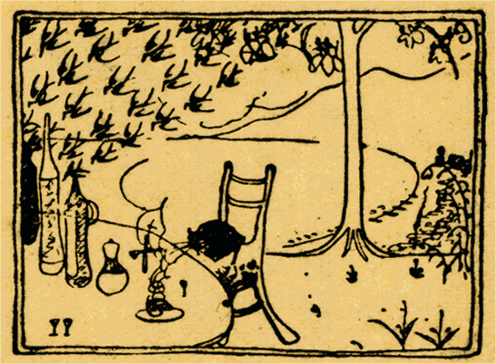
［＃改ページ］
27.  . 10
. 10
桐の花とカステラの時季となつた。私は何時も桐の花が咲くと冷めたい
吹笛の哀音を思ひ出す。五月がきて東京の
西洋料理店の階上にさはやかな夏帽子の淡青い麦稈のにほひが染みわたるころになると、妙にカステラが粉つぽく見えてくる。さうして若い客人のまへに食卓の上の薄いフラスコの水にちらつく桐の花の淡紫色とその暖味のある新しい黄色さとがよく調和して、晩春と初夏とのやはらかい気息のアレンヂメントをしみじみと感ぜしめる。私にはそのばさばさしてどこか手さはりの渋いカステラがかかる場合何より好ましく味はれるのである。粉つぽい新らしさ、タツチのフレツシユな印象、実際
触つて見ても懐かしいではないか。同じ黄色な菓子でも飴のやうに
滑つこいのはぬめぬめした油絵や水で洗ひあげたやうな水彩画と同様に近代人の繊細な感覚に快い反応を起しうる事は到底不可能である。
新様の仏蘭西芸術のなつかしさはその品の高い鋭敏な新らしいタツチの面白さにある。一寸触つても指に付いてくる六月の棕梠の花粉のやうに、月夜の温室の薄い硝子のなかに、絶えず淡緑の細花を顫はせてゐるキンギン草のやうに、うら若い女の肌の弾力のある軟味に冷々とにじみいづる夏の日の冷めたい汗のやうに、近代人の神経は痛いほど常に顫へて居らねばならぬ。私はそんな風に感じたいのである。
＊
短歌は一箇の小さい緑の古宝玉である、古い悲哀時代のセンチメントの
精である。古いけれども棄てがたい、その完成した美くしい形は東洋人の二千年来の悲哀のさまざまな
追憶に依てたとへがたない悲しい光沢をつけられてゐる。その面には玉虫のやうな光やつつましい杏仁水のやうな匂乃至一絃琴や古い日本の笛のやうな素朴な Lied のリズムが
動いてゐる。なつかしいではないか、若いロセツチが生命の家のよろこびを古いソンネツトの形式に寄せたやうに私も奔放自由なシムフオニーの新曲に自己の全感覚を響かすあとから、寥しい一絃の古琴を新らしい悲しい指さきでこころもちよく爪弾したところで少しも差支へはない筈だ。市井の俗人すらその忙がしい銀行事務の折々には一鉢のシネラリヤの花になにとはなきデリケエトな目ざしを送ることもあるではないか。私はそんな風に短歌の匂に親しみたいのである。
＊
その小さい緑の古宝玉はよく香料のうつり香の新しい汗のにじんだ私の掌にも載り、ウイスキイや黄色いカステラの付いた指のさきにも触れる。而して時と処と私の気分の相違により、ある時は桐の花の淡い匂を反射し、また草わかばの淡緑にも映り、或はあるかなきかの刺のあとから赤い血の一滴をすら点ぜられる。
私は無論この古宝玉の優しい触感を愛してゐる。而已ならず近代の新しいそして繊細な五官の汗と静こころなき青年の濃かな気息に依て染々とした特殊の光沢を附加へたいのである。併し私はその完成された形の放つ深い悲哀を知つてゐる。実際完成されたものほどかなしいものはあるまい、四十過ぎた世帯くづしの仲居が時折わかい半玉のやうなデリケエトな目つきするほどさびしく見られるものはない。わかい人のこころはもつと複雑かぎりなき未成の音楽に憧がれてゐる。マネにゆき、ドガにゆき、ゴオガンにゆき、アンドレエエフにゆき、シユトラウス、ボオドレエル、ロオデンバツハの感覚と形式にゆく。かの小さな
緑玉の古色は私がそれらの強烈な色彩の歓楽に疲れたとき、やるせない
魂の余韻を時としてしんみりと指の間から通はすだけの事である。即かりそめの病に飲む一杯の古いシヤンペンの味である。
＊
私の哀しい Nostalgia がまた一絃の古琴にたまたま微かな月光の如くつかずはなれず付纏ふ時に、ある若い人達の集団はこれを唯一の楽器として、行住座臥、凡ての清新な
情緒と凡ての苦い神経の悦楽とを委ねて満足してゐる。新人の悲哀は古い詠嘆の絃にのぼせて象徴の世界を観照すべくあまりに複雑であり深刻であり而かも而かも傷ましいほど痛烈である、わが友よ、古い器楽の悲哀を知れ。さうしてその幽かな哀調の色に執し過ぎて些かだにその至醇なる謙譲の美徳を傷つくるな。
ある時はビーヤホールのかたかげにその慎しい音色を懐かしむこともある。しかし私には白昼夏の光のふりそそぐ日比谷公園の音楽堂の上に、凡ての満足と充実した凡ての生の歓喜とを以てその古琴独奏の矜を衆人の目前に曝すだけの勇気はない。そはあまりに無惨である。新人よ、汝の意の趣くままに、汝の心境の移りゆくままに、ある時は新しい戯曲に、小説に、パントマイムに、秋の日のはかないロマンツアに、太棹に、匈牙利古曲に、ピアノソロに、或は
管絃楽の高き調にゆき、銀笛を吹き、道化た面して
弄玩品の鉄琴をもうちたたけ。さうして時々その古い一絃の古琴のうへに疲れたる汝の
柔軟かな白い手をさしのべよ。遊び尽くした小鳥の日暮れて古巣の梢にかへるやうに、日光と快楽とに倦んだ心のさみしい燈心草の陰影をもとめるやうに。
＊
古い小さい
緑玉は水晶の函に入れて刺戟の鋭い洋酒やハシツシユの罎のうしろにそつと秘蔵して置くべきものだ。古い一絃琴は仏蘭西わたりのピアノの傍の薄青い陰影のなかにたてかけて、おほかたは静かに眺め入るべきものである。私は短歌をそんな風に考へてゐる。
さうして真に愛してゐる。
＊
私の詩が色彩の強い印象派の油絵ならば私の歌はその裏面にかすかに動いてゐるテレビン油のしめりであらねばならぬ。その寂しい
湿潤が私のこころの小さい古宝玉の緑であり一絃琴の瀟洒な啜り泣である。
私の新しいデリケエトな素朴でソフトな官能の余韻はこの古い本来の哀調の面目を傷けぬほどの弱さに常に顫へて居らねばならぬ。
而してしみじみと桐の花の哀亮をそへカステラの粉つぽい触感を加へて見たいのである。
＊
単なる純情詩の時代は過ぎた。私らはシムプルな情緒そのものを素朴な古人のやうに詠歎することに最早や少からぬ不満足を感ずる。赤子の如く凡てをフレツシユに感ずる心はまた品の高い文明人の渋いアートに醇化されねばならぬ。私は涙を惜しむ。何らの修飾なく声あげて泣く人の悲哀より一木一草の感覚にも静かに涙さしぐむ品格のゆかしさが一段と懐しいではないか。実際、思ふままのこころを挙げてうちつけに掻き口説くよりも、私はじつと握りしめた指さきの微細な触感にやるせない片恋の思をしみじみと通はせたいのである。
鳴かぬ小鳥のさびしさ……それは私の歌を作るときの唯一無二の気分である。私には鳴いてる小鳥のしらべよりもその小鳥をそそのかして鳴かしめるまでにいたる周囲のなんとなき空気の捉へがたい色やにほひがなつかしいのだ、さらにまだ鳴きいでぬ小鳥鳴きやんだ小鳥の幽かな月光と草木の陰影のなかに、ほのかな遠くの

の花の甘い臭に刺戟されてじつと自分の悲哀を凝視めながら、細くて赤い嘴を顫してゐる気分が何に代へても哀ふかく感じられる。私は如何なるものにも風情ある空気の微動が欲しい。そのなかに桐の花の色もちらつかせ、カステラの手さはりも匂はせたいのである。
＊
私の歌にも欲するところは気分である、陰影である、なつかしい情調の吐息である。……
（小さい藍色の毛虫が黄色な花粉にまみれて冷めたい亜鉛のベンチに匐つてゐる……）
私は歌を愛してゐる。さうしてその淡緑色の小さい毛虫のやうにしみじみと私の気分にまみれて、拙いながら真に感じた自分の歌を作つてゆく……
＊
五月が過ぎ、六月が来て私らの皮膚に
柔軟かなネルのにほひがやや熱く感じられるころとなれば、
西洋料理店の白いテエブルクロスの上にも紫の釣鐘草と苦い珈琲の時季が来る。
私はこのいつもの詩のやうになつた Essey
［＃「Essey」はママ］ を植物園の長い薄あかりのなかでいまやつと書き了へたところだ。
［＃改丁］
［＃ページの左右中央］
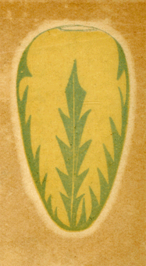
［＃改ページ］
春の鳥な鳴きそ鳴きそあかあかと
外の
面の草に日の入る夕
銀笛のごとも
哀しく
単調に過ぎもゆきにし夢なりしかな
しみじみと物のあはれを知るほどの
少女となりし君とわかれぬ
いやはてに
鬱金ざくらのかなしみのちりそめぬれば
五月はきたる
葉がくれに青き
果を見るかなしみか花ちりし日のわが思ひ出か
ヒヤシンス薄紫に咲きにけりはじめて心顫ひそめし日
かくまでも黒くかなしき色やあるわが思ふひとの春のまなざし
君を見てびやうのやなぎ薫るごとき
胸さわぎをばおぼえそめにき
南風モウパツサンがをみな子のふくら
脛吹くよき
愁吹く
南風
薔薇ゆすれりあるかなく
斑猫飛びて死ぬる夕ぐれ
凋れゆく高き花の香身に
染みつ貧しき
街の春の夜の月
寝てきけば
春夜のむせび泣くごとしスレート屋根に月の光れる
たんぽぽに誰がさし置きし
三すぢほど日に光るなり春の三味線
ゆく水に赤き日のさし水ぐるま春の
川瀬にやまずめぐるも
白き犬水に飛び入るうつくしさ鳥鳴く鳥鳴く春の
川瀬に
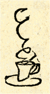
一匙のココアのにほひなつかしく
訪ふ身とは知らしたまはじ
黒耀の石の
釦をつまさぐりかたらふひまも物をこそおもへ
薄あかき爪のうるみにひとしづく落ちしミルクもなつかしと見ぬ
寂しき日赤き酒取りさりげなく強ひたまふにぞ涙ながれぬ
あまりりす息もふかげに燃ゆるときふと
唇はさしあてしかな
くれなゐのにくき唇あまりりすつき放しつつ君をこそおもへ
はるすぎてうらわかぐさのなやみよりもえいづるはなのあかきときめき
くさばなのあかきふかみにおさへあへぬくちづけのおとのたへがたきかな
わかきひのもののといきのそこここにあかきはなさくしづこころなし
ゆふぐれのとりあつめたるもやのうちしづかにひとのなくねきこゆる
ゆく春の喇叭の
囃子身にぞ染む
造花ちる雨の日の暮
ああ笛鳴る思ひいづるはパノラマの
巴里の空の春の夜の月
美くしき「夜」の横顔を見るごとく遠き
街見て心ひかれぬ
薄暮の
水路に似たる心ありやはらかき夢のひとりながるる
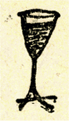
そぞろあるき煙草くゆらすつかのまも
哀しからずやわかきラムボオ
けふもまた泣かまほしさに
街にいで泣かまほしさに街よりかへる
やはらかきかなしみきたるジンの酒とりてふくめばかなしみきたる
ナイフとりフオクとる
間もやはらかに涙ながれしわれならなくに
にほやかに女の
独唱の沈みゆくここちにかなし春も暮るれば
ウイスキーの強くかなしき口あたりそれにも
優して春の暮れゆく
かくまでも心のこるはなにならむ
紅き
薔薇か酒かそなたか
すずろかにクラリネツトの鳴りやまぬ日の夕ぐれとなりにけるかな
にほやかにトロムボーンの音は鳴りぬ君と歩みしあとの思ひ出
廃れたる園に踏み入りたんぽぽの白きを踏めば春たけにける
やはらかに髪かきわけてふりそそぐ香料のごと
滲みるゆめかも
きりはたりはたりちやうちやう血の色の
棺衣織るとか悲しき
機よ
ロンドンの悲しき言葉耳にあり花赤ければ命短し
いと高き君がよき名ぞ忍ばるる赤きロンドン赤きロンドン
狂ほしく髪かきむしり昼ひねもすロンドンの
紅をひとり
凝視むる
縫針の娘たれかれおとなしくロンドンの花を踏みて帰るも
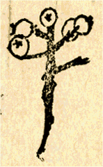
枇杷の木に黄なる枇杷の実かがやくとわれ驚きて飛びくつがへる
枇杷の実をかろくおとせば
吾弟らが麦藁帽にうけてけるかな
ケエヅグリのあたまに火の点いた、潜うんだら消えた
吾弟らは
鳰のよき巣をかなしむと夕かたまけてさやぎいでつも
Gonshan, Gonshan, 何処へいた、
きのふ札所の巡礼に
馬鈴薯の花咲き穂麦あからみぬあひびきのごと岡をのぼれば
黒鶫野辺にさへづり
唐辛子いまし花さく君はいづこに
病める児はハモニカを吹き夜に入りぬもろこし
畑の黄なる月の出
日の光
金糸雀のごとく顫ふとき硝子に
凭れば人のこひしき
啄木鳥の木つつき
了へて去りし時黄なる夕日に
音を絶ちしとき
雲あかく日の入る夕
木々の実の吐息にうもれ鳴く鳥もあり
あかあかと五重の塔に入日さしかたかげの闇をちやるめらのゆく
かかる時地獄を思ふ、君去りて雲あかき野辺に煙渦まく
韮崎の白きペンキの駅標に薄日のしみて光るさみしさ
柿の赤き実、旅の男が気まぐれに泣きて
去にきと人に語るな
たはれめが青き眼鏡のうしろより朝の霙を透かすまなざし
日も暮れて
櫨の実
採のかへるころ
廓の裏をゆけばかなしき
猫やなぎ薄紫に光りつつ暮れゆく人はしづかにあゆむ
水面ゆく櫂のしづくよ雪あかり漕げば河風身に染みわたる
雪のふる夜昔ながらの蝋燭の裸火にうつし出されし団蔵の仁木の凄さよ
わが友は仁木の顔に
面あかりさしつけながら花道をゆく
［＃改丁］
［＃ページの左右中央］
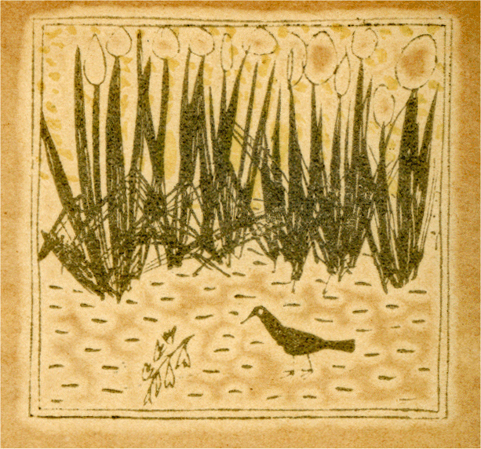
［＃改ページ］
手にとれば桐の反射の薄青き新聞紙こそ泣かまほしけれ
山羊の乳と山椒のしめりまじりたるそよ風吹いて夏は来りぬ
指さきのあるかなきかの青き
傷それにも夏は
染みて光りぬ
草わかば黄なる小犬の飛び
跳ねて走り去りけり
微風の中
草わかば踏めば身も世も黄に
染みぬ
西洋辛子の
粉を花はふり
撒く
こころもち黄なる花粉のこぼれたる薄地のセルのなで肩のひと
草わかば色鉛筆の赤き粉のちるがいとしく
寝て削るなり
夕されば棕梠の花ぶさ黄に光る公園の
外に座る
琴弾者
田舎家に中風病みのわが
小父が赤き花見る春の夕暮
きさくなる
蜜蜂飼養者が赤帯の露西亜の
地主に似たる初夏
あまつさへ赤き花ちり小馬
嘶く農家の
白日になげき入りぬる
ほそぼそと
出臍の
小児笛を吹く紫蘇の畑の春のゆふぐれ
太葱の一茎ごとに
蜻蛉ゐてなにか恐るるあかき夕暮
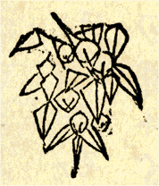
青き果のかげにわれらが食卓をしつらへよ、春を惜むわかき日のこころよ
あひびきの朝な夕なにちりそめし
鬱金ざくらの花ならなくに
サラダとり白きソースをかけてましさみしき春の思ひ出のため
さくらんぼいまださ青に光るこそ悲しかりけれ花ちりしのち
青き
果のかげに椅子よせ春の日を友と惜めば薄雲のゆく
酒
注げば黄なる薄雲桐の木の木の間に見えて夏は来にけり
かなしげに春の小鳥も啼き過ぎぬ赤きセエリーを君と鳴らさむ
燕、燕、春のセエリーのいと赤きさくらんぼ
啣え飛びさりにけり
ああ
五月蛍匍ひいでヂキタリス
小さき鈴ふるたましひの泣く
金口の露西亜煙草のけむりよりなほゆるやかに燃ゆるわが恋
やはらかに誰が
喫みさしし
珈琲ぞ紫の吐息ゆるくのぼれる
よき
椅子に黒き猫さへ来てなげく初夏晩春の濃きココアかな
蟾蜍が出て来た、皆で寄つてたかつて胡椒をふりかけたり、スープを飲ませたりした
しろがねの小さき匙もて
蟾蜍スープ啜るもさみしきがため
干葡萄ひとり摘み取りかみくだく食後のほどをおもひさびしむ
カステラの黄なるやはらみ新らしき味ひもよし春の暮れゆく
昼餐どきはてしさびしさ春の日も紅茶のいろに沈みそめつつ
まひる野の玉葱の花紫蘇の花かろく
哀しみ君とわかるる
いつしかに春の名残となりにけり
昆布干場のたんぽぽの花
寝てよめば黄なる
粉つく小さき字のロチイなつかしたんぽぽの花
野薊に
触れば
指やや
痛し汐見てあればすこし眼いたし
洋妾の長き
湯浴をかいま見る黄なる
戸外の
燕のむれ
ふはふはとたんぽぽの飛びあかあかと夕日の光り人の歩める
乳のみ児の肌のさはりか
三の
絃なするひびきか春のくれゆく
魔法つかひ
鈴振花の
内部に泣く心地こそすれ春の日はゆく
「春」はまたとんぼがへりをする児らの悲しき頬のみ見つつかへるや
［＃改丁］
［＃ページの左右中央］
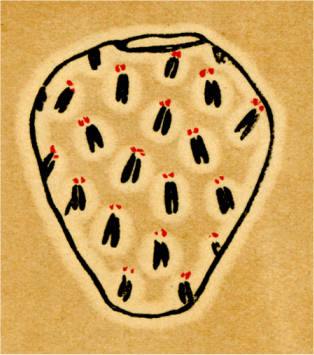
［＃改ページ］
六月が来た、なつかしい紫のヂキタリスと苦い珈琲の時節、赤い土耳古帽の蛍が萎え、憂鬱な心の
蟾蜍がかやつり草の
陰影から啼き出す季節――而してやや蒸し暑くなつたセルのきものの肌触りさへまだ何となく棄て難い今日此頃の
気惰るい快さに、ふつくらと軽いソフアに身を投げかけて、物憂げに煙草をくゆらし、女を思ひ、温かい吐息と、真昼マグネシヤの幻光の中に幽かな黄昏の思想を慕ひ恍惚の
薄明を待つわかい男の心ほど悩ましいものはあるまい。
零時二十三分、日の光はヴエニス模様の色硝子を透かして

掛の浮織を悩まし、人も居ない珈琲店の空椅子には、今恰度真白な猫がまるで乳酪の
塊のやうにとろみかけてゐる。而して誰が
喫みさしたのか、眩ばゆい食卓の一角から
軟らかな珈琲の吐息がたちのぼる。
珈琲、珈琲、ひとりでにわれとわが心の匂を温め乍ら、やはらかな紫のいろにたちのぼるその吐息、病ましい物思の何とも捉へどころのないやうなその香煙の縺れを、
懶怠た身の
起伏に何といふこともなく眺めやる昼の男の心持、また逃げてゆく「時」のうしろでをも
恍惚と空に
凝視むる心持……
ゴツホの狂ほしい外光の痛さ、ゴウガンの
粗い生そのものの調色、或はマチスやピカソ、物を角に見るキユビストの新らしい神経の触覚よりもかういふ日の
疎ましい
懶怠ものの心にはあのルノワアルなどのふくよかな色の温味と悩ましい息づかひの魅力、さうしたものの美しさがどれだけ豊醇な親しさと懐かしさとをおぼえさせてくれるか知れない。
珈琲の煙はまだ消えもやらずにたちのぼる。やや疲れたらしいやうなロオデンバツハの物おもひ、美しい宝石商人の溜息、ボオドレエルの苦笑ひ、或はレニヱ、サマンの曇りと優しみ、それらを一つにしてたちのぼるわが珈琲の匂の強さ、なつかしさ、心もとなさ、
苛々しさ……何よりも芸術の粋を慕ふ私の心は渾然としたその悲念の
溶ましさに
訳もなく
苛められ、魅せられ、ひき包まれ、はたまた泣かされる。さてはあの怪しい沈黙の秒刻に譬へやうもない霊魂の
歔欷をかりそめにも聴き逃さなかつたヴエルレエヌの純一な気分も恰度デリケエトなかういふ心持では無かつたか。
珈琲の煙はとりもなほさず心の言葉である。匂である。色であり音楽である。而して渋くて苦い珈琲末は心の心、霊魂の
生地。匙は感覚。凡て溶かして掻き廻す観相の
余裕から初めてとりあつめた哀楽のかげひなたが軟かな思の吐息となつてたちのぼる。もの思はしい中に限りもない色と香の諸相をひき包んで六月の光線に美しい媚のあや糸を
縺らす苦い珈琲の風味は決して
自己を忘れたロマンチツクな空の幻でも単純な甘いセンチメントの歎きでもない。真実、珈琲から珈琲の煙が立つやうに内心の深みから素直に心の吐息を掻き立たせてその融合渾沌のさかひに怪しい芸術の矜持と魔力とを物静かに薫らし得る純一な詩人の歓会はまた何にもかへがたい真言秘密の妙諦である。世に天才の名を恣にする人達の間にも真にわが霊の匂を知り、言葉のかげひなた、ものの媚、色あひ、幽かな色触香響の末の末まで嗅ぎわけて常に怪しい悲念にかき暮れ得る高貴な心の
所有者は極めて少い。況して世のつねのかいなでびとが心をや。芸苑の中にしてなほ荒削りの珈琲末を悦び、但しは心と言葉の距離徒に遠くしてそのみなもとの苦き香気を忘れたつやもない思想家と偽りものの工人の世には多さよ。
珈琲、珈琲、珈琲の煙はまだ
冷めもやらずにたちのぼる。紫いろの息づかひ、ロダンの線画……
乳酪の猫がまだ夢みるやうにその光つた
尻尾の尖の細かな緑色の痙攣を
凝視めてゐる。
窖のやうな入口からくわつと明るい銀座の通が見える、白日の輝き、濡れた舗石、柳の葉、そのかげの赤い草花の鉢、寄せかけた自転車の銀の輪……
目に見えぬ空の
何処かで花火が揚る。
そのうちにやや陰影の曇りを煙らした室内の光に
懶怠けはてた私の物思が今はもう珈琲の匂にさへ堪へがたいほどの疲れをおぼえる。而してただそこはかとなくアンダンテの夢の調子に堕ちてゆく。
私は思ふ、男をんなの夏の中夜の
秘戯をかういふ昼の悩ましさにかろく描きつづけてゐた歌麿の気持、まだ暮れもやらぬ昼の舞台に黄色いラムプを
点す若い
女形の心持、白芥子の花に
纏る昼の幽霊、投げやりな昼間の三味線、湯上りの肌に匂ふあかい石竹、而して白日の光にうち揚ぐる夜の花火の紅緑・翡翠・土耳古玉・銀光の紫……目に見えぬ星と宝玉の一悲劇、眩耀と消滅の夢。
而してまた公園の昼のアーク燈を、白昼のシネマトグラフの瞬き、或は薄い面紗のかげに仄かに霞む人妻の愁はしい春の素顔を。
総じて明るい中の物の瞬き、幽愁の
燻し、疲労と陰影の薄笑ひ、眩暈中の杏仁水、それらから来る寂しさ、悲しさ、なつかしさ、さうした優しさ果敢なさ
溶ましさが私にはあの悲み極まつた純情の嗚咽、あらゆる観念の寂び、綺羅を鏤めた美しい夜の横顔、或はサロメ女王の驕奢を尽した踊の手さばきよりも却て染々とした歎息の
推移を感ぜしめる。
涙を惜め、涙を惜め、高品なわかい心のそこひもわかぬ胸の秘奥に啜り泣けよ。芭蕉の寂びはまだうら若い私達が落ちつくところではない、少くとも世を楽しむメエテルリンクの
悲愁と
神秘な蒼い陰影の靄の中に寂しい心の
在所を探す物馴れぬ Stranger の心持、その心を私は慕ふ。
乳酪の白い猫が幽かに鼾をかきはじめた。その時私も静かに女を呼んで一杯のウオツカを求める。この昼の暑さに無色透明なウオツカが小さなリキユグラスを透かして
冷たい漣を立てる。その投影がまたプリズムのやうに、頁を開いてあるモウパツサン集の黒い活字に
細々と果敢ない染色をちらつかす。
ふと点の赤いｉの字がひとつ眼につく。それが物憂げに動いて上の行の Chambre の b の字に匍ひ出し、しんみりと蒼い光を立てて斜めに Les enfants の L を横ぎり、もひとつ上の行 Passion の P に喰ひつくやうに留まつた。蛍だ、疲れた小さな蛍、点の赤いｉの字、その尻を抓むと力のない人霊色の燐光が怪しい
湿潤を放つ。私は何時しか幼い少年の日の心に歌つた「おもひで」のあの蛍の一聯を思ひ出した。
そなたの首は骨牌の
赤いヂヤツグの帽子かな、
光るともなきその尻は、
感冒のここちにほの青し、
しをれはてたる幽霊か。
透き徹つたウオツカと蛍の赤い点、その冷たさ悩ましさ、私は染々と昼の蛍に執着する。而してその銀の
燻しをかけた蒼白い哀傷の光を愛する。
業平の高い
調はまさに感じ易い夜の蛍のセンチメントである。私達は時としてその繊細な平安朝の詠嘆、乃至は純情の雅びやかなる啜り泣き、若くは都鳥の哀怨調に同じ麗らかな心の共鳴を見出す事はある、而しなほ苦い近代の芸術にはまだその上に堪へがたいセンジユアルな日光の触覚と渋い神経の瞬きとを必要とする。

銀の昼の燻しを必要とする。さもなくばアーク燈の眩ぶしい光のかげにあるかなきかに飛ぶ夜の蛍の燐光を闇の夜のそれよりも更に哀れぶかくやるせないものに感じなければならないのである。
午後二時過ぎ、蛍はいつのまにか珈琲椀のかげにかくれて白い頁の Passion の P の字のみが強く光り出した。
乳酪の白猫がまだ睡つてゐる。昼寝から覚めた料理人が今また青い甘藍の球でも

ぎとるのか厨の方で新らしい野菜のにほひがすずろぐ。さうして水道栓の水の滴り、誰かしら吹き鳴らす昼の銀笛……
私の気まぐれな聯想はまた鮮な郊外の景色に手を振つてゆく郵便脚夫の白い帽子に飛んでゆく。ゴツホの野外の景色、段々畑の銀緑色に雨の霽れ間の郭公が啼き叫び、白い葱の花のかげから出臍の児が裸のままで笛を吹く……
凡ての因襲から放れ、馴れ過ぎた官能の愛着を断ちきり、而して更に新らしい驚異の鋭感にやるせなきわれ自らの
霊を慄かす近代の心にもなほありしそのままの声音に郭公は啼き、寂しい日本の笛は鳴る。ただ感ずる詩人の触覚と、周囲の気分の如何に依て古くも珍らしくも聴き倣されるのである。
笛は鳴る、夜の笛より昼の音色のわびしさを、公卿の物の哀れよりも弥さらに病児の温かいその吐息を、私の神経は悲しむ、而して葱のあたまに縺るる白い羽虫のやうに羽ばたく。
笛の音は何時の世までも滅びない、日本の笛の哀れさも何時の如何なる人の心にも染み込んでゆく。その笛本来の幽かな弱い寂しさは誰しもの胸の中に生れながらに秘められた純情のなげきである。高貴な内心の啜り泣き、やがては奔放限りなき管絃楽のそのみなもとである。
そのみなもとを悲しめ、而して至醇なそのみなもとの歌の気禀をかりそめにも傷くるな、笛の匂を知れ、完成された大和歌の心根に更に悲しい銀光の燻しをかけよ。ただ懐かしいその笛に強ひては残虐な煤煙の濁りと工場の鉄の響を吹きかけるな。
私はただ馴れ過ぎた
俗人の詠歎を忌む。されば日本の笛を取る心もちにもなほ鮮かな Stranger の驚異と感触を貴み、目白僧園の鐘の音にアベマリヤの晩鐘を忍ぶ以太利亜旅人の春愁を悟り、異国の菊の
香に新らしい流離の涙をそそぐピエルロチが秋の心をまたとなく懐かしむ。私はまた梅の木に鳴く鶯よりも脳病院の
に鳴く鶯に泣き、定斎の軋みに驚く鶯に連れて驚く。有明の月に血を吐くほととぎすの悲歎を曾て見知らぬ私は寧ろキヤベツ畑の雨に啼く郭公を楽しいものに哀れみ、昔ながらの古い前栽の繁みに飛ぶ蛍よりも客待の人力車のかげに仄かに蒼白いお尻のパツチを光らす東京の蛍をこの上なく今の心に親しむ。さりながら凡ての因襲から逃れて常に新らしい官能の薄明りにわれとわが霊の
在所をたづねゆくわかい旅人の心にも思ひ棄てがたきは日本の笛のあはれである。哀みのそのみなもと、純情のかの吐息である。
時が経つた。いつしか黄ばみかけた日の光のもとに、薄青いクローバ模様の壁にかけた玩具の木時計が
可笑しさうにお尻の分銅を動かし乍ら今三時を点つ。而して驚かされた乳酪の
塊が椅子の上からすべり下り、
料理人が細かに玉葱の庖丁を刻み、
懶けたソフアの物思が軟かに温かい欠伸をつく。
くわつとした入口の外の明るさ、自転車が去り、草花の赤い鉢に静かに煉瓦屋根の投影が軽い
塵埃と縺れる。
Cuckoo, jug-jug, pu-we, to-witta-woo!
Gristchen, gristchen, tutch, tutch, tutch!
鳥屋が通る、くわつと明るい人道を車を曳いて。
Cuckoo, jug-jug, pu-we, to-witta-woo!
車の上の円い四角な金網作りの、或は竹製の、大小さまざまの鳥籠、その鳥籠が六月の日に揺られながら蒸しかへるやうに光つてゆく。
Cuckoo, jug-jug, pu-we, to-witta-woo!
Gristchen, gristchen, tutch, tutch, tutch!
［＃改丁］
［＃ページの左右中央］
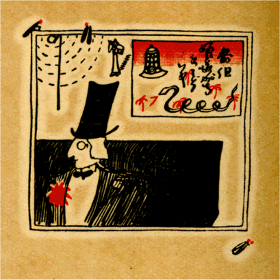
［＃改ページ］
美くしきかなしき痛き放埒の薄らあかりに堪へぬこころか
ものづかれそのやはらかき青縞のふらんねるきてなげくわが恋
わがゆめはおいらん
草の香のごとし雨ふれば濡れ風吹けばちる
鳴きしきるは葦きり、舌うつは海、さるにてもせんなや、夜の明けがたのつれびき
アーク燈
点れるかげをあるかなし蛍の飛ぶはあはれなるかな
なにとなく
軍鶏の啼く夜の月あかりいぶかしみつつ立てる女か
博多帯しめ、筑前しぼり、筑前博多の帯しめて、
あゆむ姿は柳腰……
すつきりと筑前博多の帯をしめ忍び来し夜の白ゆりの花
ぬば玉の銀杏がへしの君がたぼ美くし黒し蓮の花さく
ある遊女の部屋に、薄い硝子の水盤があつた、夏の夕方、夜のひきあけ、ひけすぎの薄いあかりにほのかにウオタアヒヤシンスの花が咲いてはまた萎れてゆくのであつた
水盤の水にひたれるヒヤシンスほのかに咲きて物思はする
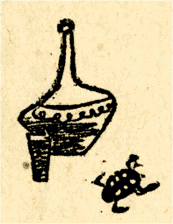
フラスコに青きリキユールさしよせて
寝ればよしなや月さしにけり
二上りの宵のながしをききしよりすて身のわれとなりにけむかも
毒草なれどもその花かすかに、
光あれどもその色さびし
雪の下白く
小さく咲きにけり喜蝶が部屋の
箱庭の山
わかき身の感じ易さよ
硝子杯の薄き
罅にも心
染みつつ
顫へ易く傷つき易き心あり薄らあかりにちる花もあり
木の枝に青き小鳥のとまりゐてただほれぼれと鳴ける品川
玉虫の
一羽光りて飛びゆけるその空ながめをんな寝そべる
悩ましく
廻り
梯子をくだりゆく春の夕の踊子がむれ
やるせなき春のワルツの舞すがた
哀しくるほし君の
踊れる
美くしきさいへかなしく愚かしき
疲れつくると踊子踊る
紫のいたましきまで
一人踊るスカートの
陰影に春はくれゆく
ただ飛び
跳ね踊れ踊子
現身の
沓のつまさき春暮れむとす
たらんてら踊りつくして疲れ伏す深むらさきのびろうどの椅子
あでやかに踊りつかれしさみしさか寝椅子に人を待てるこころか
くろんぼが泣かむばかりに飛び
跳ぬる尻ふり踊にしくものはなし
恋すてふ浅き浮名もかにかくに立てばなつかし白芥子の花
薄青きセルの
単衣をつけそめしそのころのごとなつかしきひと
片恋のわれかな身かなやはらかにネルは着れども物おもへども
わが世さびし
身丈おなじき
茴香も薄黄に花の咲きそめにけり
茴香の花の中ゆき君の泣くかはたれどきのここちこそすれ
白き籐椅子をふたつよせてものおもふひとのおだやかさよ。読みさせるはアルベエル・サマンにや、やはらかに物優しき夕なりけり
さしむかひ
二人暮れゆく夏の日のかはたれの空に桐の匂へる
かきつばた男ならずばたをやかにひとり身投げて死なましものを
桐の花ことにかはゆき半玉の泣かまほしさにあゆむ雨かな
すずかけの木とあかしやとあかしやの木とすずかけと舗石みちのうす霧に
ほのぼのと人をたづねてゆく朝はあかしやの木にふる雨もがな
蛍飛び
蟾蜍啼くなりおづおづと忍び逢ふ夜の薄霧の中
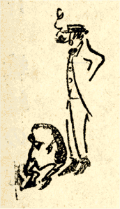
蟾蜍幽霊のごと啼けるあり人よほのかに歩みかへさめ
ゆくりなくかかるなげきをきくものか月蒼ざめて西よりのぼる
烏羽玉の夜のみそかごと悲しむと
密かに
蟇も啼けるならじか
宝玉のこよなき心とり落しよきひと泣けば
蟇もまた啼く
いかばかり麻の畑の青き葉の身には
染むらむ人妻の泣く
人知れず忍ぶ心は
烏羽玉の黒き夜のごとかがやきいでぬ
青柿のかの柿の木に小夜ふけて白き猫ゐるひもじきかもよ
白き猫膝に抱けばわがおもひ音なく暮れて病むここちする
白き猫泣かむばかりに春ゆくと
締めつゆるめつ物をこそおもへ
弓矢八幡寝はせねど、寝たと
おしやらばなとせうぞの
夜おそくかけしふすまに匍ひのぼる黒きけもののけはひこそすれ
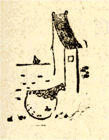
乳緑のびろうどの
河豚責めふくらし
昨日も男涙ながしき
河豚よ
河豚よ
汝は愚かし地に
跳ねて沖津玉藻の香のなげきする
いそいそと広告燈も廻るなり春のみやこのあひびきの時
白耳義新詩人のものなやみは静かにしてあたたかく、芭蕉の寂はほのかに涼し
かはたれのロウデンバツハ芥子の花ほのかに過ぎし夏はなつかし
空見れば
円弧燈に雪のごと羽虫たかれり春よいづこに
薄暮の
水路にうつるむらさきの
弧燈の春の愁なるらむ
新らしき匂なによりいとかなし勧工場のぞく五月のこころ
人力車の
提灯点けて客待つとならぶ河辺に蛍飛びいづ
薄あかり
紅きダリヤを襟にさし
絹帽の老いかがみゆく
夏よ夏よ鳳仙花ちらし走りゆく人力車夫にしばしかがやけ
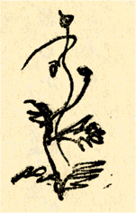
折ふしのものの
流行のなつかしくかなしければぞ夏もいぬめる
青玉のしだれ花火のちりかかり消ゆる路上を君よいそがむ
夏の夜の牡丹燈籠の薄あかり新三郎を誰か殺せる
ちりからと硝子問屋の燈籠の
塵埃うごかし秋風の吹く
［＃改丁］
［＃ページの左右中央］
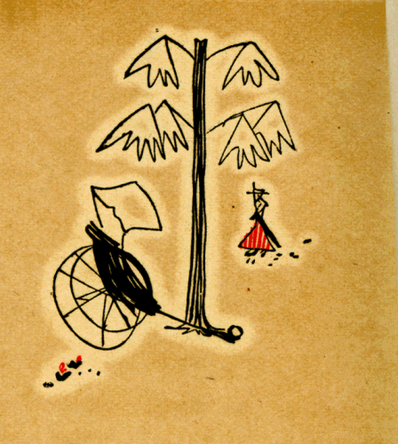
［＃改ページ］
新らしき野菜畑のほととぎす背広着て啼け雨の
霽れ
間を
キヤベツの
段々畑銀緑なり雨霽れ空に白雲の湧く
あまつさへキヤベツかがやく畑遠く郵便脚夫疲れくる見ゆ
入日うくるだらだら坂のなかほどの釣鐘草の黄なるかがやき
ぎはの男の頬のみ
明う見せ釣鐘草の中を汽車ゆく
夏帽子瀟洒につけて身をやつす若き紳士の白百合の花
夏の日はなつかしきかなこころよく
梔子の花の汗もちてちる
きりぎりすよき
淫れ
女がひとり寝て氷食む日となりにけるかな
やるせなき
淫ら心となりにけり棕梠の花咲き身さへ
肥満れば
黒き猫夜は狂ほしくかきいだき
五月蠅きものに昼は
跳ねやる
人妻のすこし汗ばみ乳をしぼる
硝子杯のふちのなつかしきかな
栗の花四十路過ぎたる髪結の日暮はいかにさびしかるらむ
あかしやの花ふり落す月は来ぬ東京の雨わたくしの雨
検温器かけてさみしく涙ぐむ薄き肌あり
梅雨尽きずふる
二階より桐の青き葉見てありぬ雨ふる
街の
四十路の女
七月やおかめ
鸚哥の啼き叫ぶ妾宅の屋根の草に雨ふる
色硝子暮れてなまめく町の湯の
の
下なるどくだみの花
湯上りの
好いた娘がふくよかに足の爪
剪る石竹の花
長雨の蒼くさみしく
淫れてしその日かの日もいまは恋しき
長雨のあとのこころにひるがへり孔雀火のごと鳴く日きたりぬ
新らしき皮膚の
痛みかたましひの
心の汗より来るなげきか
たもちがたきこころとこころ薄ら青き蝗のごとく弾ねてなげくや
憎悪のこころ夏より秋にかけ茴香の花の咲くもあはれや
昼見えぬ星のこころよなつかしく刈りし穂に凭り人もねむりぬ
あかあかと
鶩卵を置いてゆく草場のかげの夏の日の恋
夏の日は女役者のものごしのなまめかしさに似てさびしけれ
紫の日傘さしかけ
憂き人ののらりしやらりと歩む夕ぐれ
やはらかに夏のおもひも老いゆきぬ中年の日の君がまなざし
なつかしき七月
二日しみじみとメスのわが
背に触れしその夏
麻酔の前鈴虫鳴けり
辺には紅く
小さき朝顔のさく
夏はさびしコロロホルムに
痺れゆくわがこころにも啼ける鈴虫
朝顔を
紅く小さしと見つるいのち消えむとぞする鳴け鳴け鈴虫
燕、
燕、昼の麻酔のさめがたに宙がへりして啼くはさびしも
気のふれし
女寡婦のいと蒼くしまりなき
眸に朝顔のさく
創いたしかなし鋭しまたさびし
狂人［＃ルビの「きちがい」はママ］の部屋に啼ける鈴虫

ほのかなる水くだもののにほひにもかなしや心疲れむとする
さしのぞけば向ふの
寄席に人形の治兵衛踊れりなんとせうぞの
なにおもふわかき看護婦夏過ぎて
雨夜の空に花火あがれる
宵のくちそれもひととき看護婦のはるもにか吹く夏もひととき
長廊下いろ薄黄なる水薬の瓶ひとつ持ち秋は来にけり
［＃改丁］
［＃ページの左右中央］
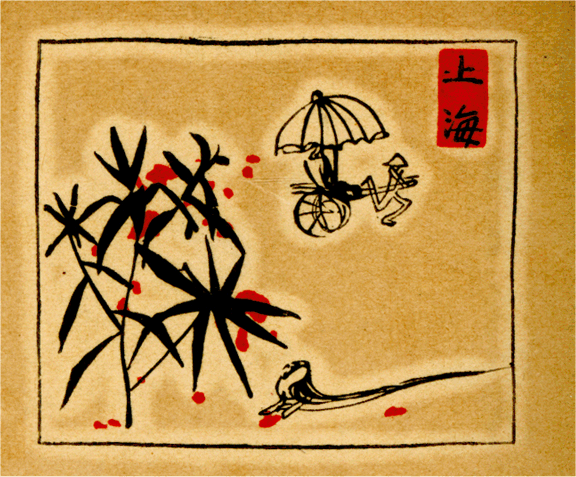
［＃改ページ］
松脂のにほひのごとく新らしくなげく心に秋はきたりぬ
薄らかに紅く
孱弱し鳳仙花
人力車の輪にちるはいそがし
鳳仙花うまれて啼ける犬ころの薄き皮膚より秋立ちにけり
秋の空酒を
顰めて飲む人の青き
額に顫ひそめぬる
眼のふかく昼も臆する男あり光れる秋をぢつと
凝視むる
銀の蠅取蜘蛛をまづ活かし秋はさやかに光りそめぬる
君がピンするどに青き虫を刺すその
冷たさを昼も感ずる
かかる日の胸のいたみのしくしくと空に光りて雨ふるらむか
しづやかに光の雨のふりそそぐ昼の心に蒼ざめてあり
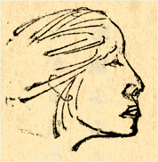
クリスチナ・ロセチが頭巾かぶせまし秋のはじめの母の横顔
食堂の黄なる硝子をさしのぞく
山羊の眼のごと秋はなつかし
秋の草白き
石鹸の泡つぶのけはひ幽かに花つけてけり
人形の秋の素肌となりぬべき白き菊こそ
哀しかりけれ
旅に来て船がかりする思あり宝石商の霧の夜の月
みすずかる信濃か日本アルプスか空のあなたに雪の光れる
静かなる秋のけはひのつかれより桜の霜葉ちりそめにけむ
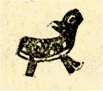
清元の新らしき撥君が撥あまりに冴えて痛き夜は来ぬ
手の指をそろへてつよくそりかへす薄らあかりのもののつれづれ
ひいやりと
剃刀ひとつ落ちてあり鶏頭の花黄なる庭さき
微かにも光る虫あり三味線の弾きすてられしこまのほとりに
蟋蟀ならばひとり鳴きてもありぬべしひとり鳴きても夜は明けぬべし
円喬のするりと羽織すべらするかろき手つきにこほろぎの鳴く
太棹のびんと鳴りたる手元より夜のかなしみや眼をあけにけむ
黒き猫しづかに歩みさりにけり昇菊の
絃切れしたまゆら
きりきりと切れし二の
絃つぎ合せ締むるこころか秋のをはりに
常盤津の
連弾の撥いちやうに白く光りて夜のふけにけり
百舌啼けば紺の腹掛新らしきわかき大工も涙ながしぬ
いらいらと葱の畑をゆくときの心ぼそさや百舌啼きしきる
いつのまに刈り干しにけむ
甘庶黍刈り干しにけむあはれ百舌啼く
水すまし夕日光ればしみじみと
跳ねてつるめり秋の
水面に
鶏頭の血のしたたれる
廐にも秋のあはれの見ゆる汽車みち
三月まへ穂麦のびたる畑なりきいま血のごとく鶏頭の咲く
柔かき光の中にあをあをと脚ふるはして啼く虫もあり
かかれとて虫の
寡婦は啼かざらむ鴉
細かに啄みにけり
武蔵野のだんだん畑の唐辛子いまあかあかと刈り干しにけれ
あかあかと胡椒刈り干せとめどなく涙ながるる胡椒刈り干せ
父親とその子の三次ひと日赤く胡椒刈り干せど物言はずけり
男子らは心しくしく
墾畑の赤き胡椒を刈り干しつくす
黄なる日に
びし
姿見鏡てりかへし人あらなくに百舌啼きしきる
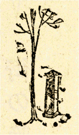
いつのまに黄なる火となりちりにけむ青さいかちの小さき葉のゆめ
都大路いまだゆらげる
橡の葉に日向雨こそふりいでにけれ
午前八時すずかけの木のかげはしる電車の霜もなつかしきかな
あかしやの金と赤とがちるぞえな、
やはらかな秋の光にちるぞえな
ただしづかに
金のよき葉のちりかへりいかばかり秋はかなしかるらむ
わが友の黒く光れる瞳より恐ろしきなし秋ふけわたる
［＃改丁］
［＃ページの左右中央］
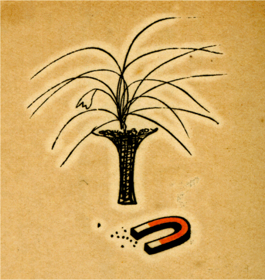
［＃改ページ］
25.  . 10.
. 10.
午後三時過ぎ、
薄黄水仙の
浅葱の新芽枯れたる芝生のなかに仕切られたる円形或は長方形の花壇のなかに二寸ばかり萠えいづ。その幾何学的なる配列のつつましさよ、風
微かにかよふ。
水噴かぬ
びたる噴水の露盤より静かに滴る水滴。
温室前の厚葉シユロランの高きそよぎ。キミガヨランの長きしだり葉に日は光り、南洋土人の頭飾の如くにうち
動ぐ。
植物園事務室より出で来りし、若き紳士の紺の背広に赤皮の靴のやはらかなる、薄黄水仙のほとりをぞゆく。
異国の人来る。男は萠黄のソフトをかぶり、女は褪紅の外套を着け、その後より鮮紅の帽かむりし二人の男女の小児爽やかに走りゆく。転づるは French か、角ぐみそめし桜の二列の並木の間の人道を、枯草の辺りを、青くして低きかなめ垣の長き径に添ひて、ハリエニシダの花黄なる彼方へとぞゆく。日は黄にして軟かく、冷めたけれども
快よき春の風吹く。
とある枯れたる芝生の隅に整はぬ円形を作りあまたの
迎春花の小さくして色黄なる花葉もなき枯枝に咲けり、高さは人の足もとにうち見らる。
砂敷ける径のほとり沈丁の花冷めたき風に甘く鋭し。
少年二人カン

スを手にさげて静心なく歩みゆく、濡れたる油絵具のにほひ新し。
老緑色の小さき園標に記したる白き文字の淡青さよ。『このおくの下に庭あり。』
暗くして青きインバネスのマワシの下に冷めたく白き指のみ見せて黄なる蜜柑をむきつつ我はゆく……
枝ぶりよきサンシユユの花の小さくして黄なる数かぎりなき哀愁よ、四時過ぎの日光をうけて風に戦げる。
人ごゑきこゆ、女のやさしき砂を踏む足音も……
色淡き、あるは
華美なる羽織のちりめんのしとやかさよ、女の一人は淡青のリボンをぞ髪につけたる。
サンシユユと径を隔てて向へるツタウルシの木の小さき黄なる花、その枝に毛虫の繭ひとつ透きて見ゆ。
遠き下町の夕とどろき、豆腐屋のラツパ、長く曳く小さき汽笛、鉄板の音。
小鳥ちろちろと鳴く。
湿れる
粉つぽくして赤みある黒き土のそこここに、枯れたる小草の淡き淡き乳黄色と、そのなかに萠えいでたる
葱色の草わかばの新しき配調を見よ。仏蘭西がへりの若紳士の軽く
着けたる
粋な背広のにほひする。
丁字形の白ペンキの二尺ばかりの立標に、W. C. と小さき横文字にて書きたる、そのつつましさに淡紫の花をすりつけて過ぎしは誰ぞ。
日の光は形円きトベラノキに遮られて空気
冷やかに風うすく匐ひくねれるサンザシに淡紅緑の芽は蕾み、そのもとに水仙の芽ぞ寸ばかり地を
抽きてうち戦ぐ。とある小枝に寥しくして
忙しき小さき白粉色の蜘蛛のおこなひよ、その糸の色なき戦慄……
銃の
音一二発――
眼をあげよ、今、くわつと
明りし二本の楠の梢を、サンシユユの黄なる花の光を、枯草の色を、淡青きヒヤシンスの芽のにほひを。
そこらに声したる人もはや去りぬ。
鳥は園の
周囲に鳴き、園丁の鍬に
堀りかへさるる赤土のやはらかなるあるかなきかの
湿潤のなかのわかき新芽のにほひよ、
冷めたけれども
力あり。
老緑色の足もとの小さき園標は日にそのさみしき半面をあてたる。その淡青き白き文字のかすかなる黄なる
反射よ。『園内の草は自生といへども摘み取るべからず』云云。
橡の枯木のもとに画架を立てたる青年画家は静物の硝子杯と皿と水さしと
醋ゆき林檎とを
描きくづしたる古カン
スの上に、まづ新しき樹の幹の White と Blue とを塗りはじめたる。すでに

りそめたる夕日は彼の男の描けるサンシユユの黄なる枝の花に、そを見る歯痛の人の顔一面に巻きつけたる白き繃帯に、わがむく蜜柑の皮の
黄橙色にさみしく光りつつあり。わが歩みは檜の日かげより丘のはづれの小亭へ、その
傍の径を下りて睡蓮科の生ひ
涵れる小さき池のほとりへゆく。
日の光はここにて淡き黄緑となり、
冷たくして透明なる水は薄らに顫へ、汚なるココア色の泥のなかに蠢めく虫ありて、水草のかげに油すこし浮く。そのうへに八つ手のやはらかなる乳金色の花穂はこの小さなる領内にうらわかき貴公子の如く佇めり。
三分ののち、われはまた広き池のほとりの老緑色のベンチに腰かく。園丁来りて踏板の上に並べほしたる靴ぬぎの
汚ごれたる毛をはたく、チヨコレートの如き埃立つ。
ここをまた蜜柑むきつつ日かげを厭ひて我はゆく……
Tobaccos と白く抜ける煙草の赤き紙標見ゆ、敷島を買はんとて寥しき売店に入るほどの饑ゑたる心と、ひとりあるきのなにとはなき哀愁に、日も暮れんとするさみしさよ。
また小亭のベンチの老緑色のつつましきまでのなつかしさに
一人ゆきて
休憩みたる十分ほどの静けさは独身のわかき男ならでは味ひ知らぬ憂愁の境ぞかし。この間に華美なる姿して金縁の眼鏡かけたる Blue-Stocking の輩二人三人淡紅の梅花のもとをゆく。肉色のクリームの如き梅の花は厭ふべし。かのわかき女の冷めたき白歯と、はしたなき English の会話とはことに興なし。我はただ花下の若草の上を日光の匍ひ来りてかなたの小さきベンチの脚に射せる淡黄緑のあるかなきかのかげのみを見つめたり。
マチ
擦れば火は風に消えて巻煙草のけむり一すぢのぼるほどにさみしき鐘は鳴る――盲唖院晩饗の鐘。
小石踏みつつ後を通る紳士の右の手にもてる新聞紙の包はや薄青し。
太く、細き汽笛……新築中の槌の音……街の小児らの声……わが遂に歩み入る竹林の青さ、日かげは灑されて新しく、わがインバネスに、ノートの罫に、径を超えて
空木の幹にて衰へ、キンギンボク、毒ウツギの青き葉は暮れやらぬ陰影のなかにありて、小砂利のあかりに鋭く嘆く。
猫柳のぼやぼやは銀紫にして、その下の廃れたる池の面には沈まんとする太陽の半円浮び、そが黄にして赤き光薄れ揺らぎつつ青みを帯べる銀の
冷たさに拡がる。
豆腐イ……豆腐イ……
テウテ
胡桃の淡紫の幹――坂をのぼりきりたるところより貯蔵庫（柑子類の植物を入れたる）の煉瓦壁見ゆ。何時も何時もわが歩みの目標となる軟かなるその壁の色はまだ芽にいでぬ薬草のにほひ痛き畑のあなたに暮れゆかんとす。
植物園の鐘鳴る。
事務室の辺より四十ばかりの憐れなる女淡青の風呂敷包を背に負ひ、手には粗末なる蜜柑函を持ちて歩み来る、木材のにほひ空虚なる函に新し、この女西洋館前のだらだら坂を下りゆく時その淡黄にて力なき壁の夕日を振りかへる。彼処には簇立せるシユロランの高き幹黒く、硝子窓にカーテン薄汚なく、入口の
扉は半ば斜に開きたり。藁づとの褪めたる色、ハヒビヤクシンの傾斜面の暗青色の静止――
短艇の船腹の如き雲灰白色の別館の上に薄れんとし、ヒマラヤ杉ひとり早春の風に戦ぐ、大きなる
魚の青き骨のごとく。
そのかげよりまた四十前後の女園丁三人手拭の頬冠りして出て来る、坂を下るとき、そのなかの素足の女半ば青きシラガミススギの蔭にゆきて、青き弁当の包を取り出しながら連のあとより急ぎゆく。
われもまた出で去る。
入口の看守はさみしげに座り、ユヅリハの葉柄の赤きが暮れんとして、閉さぬくぐりの間よりかなたの街の薄ら明をさしのぞき……さしのぞく……
（植物園手記）
［＃改丁］
［＃ページの左右中央］
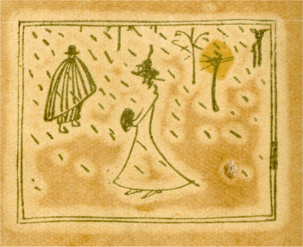
［＃改ページ］
ふくらなる
羽毛襟巻のにほひを新らしむ十一月の朝のあひびき
いと長き
街のはづれの君が住む三丁目より冬は来にけむ
しみじみと人の涙を流すときわれも泣かまし鳥のごとくに
いちはやく冬のマントをひきまはし銀座いそげばふる
霙かな
電柱の白き
堤子にいと細く雨はそそげり冬きたるらし
霊の薄き瞳を見るごとし時雨の朝の小さき
自鳴鐘
なつかしき憎き女のうしろでをほのかに見せて雨のふりいづ
男ぶりには惚れんばな、
煙草入の銀かな具がそれが因縁たい
煙草入の銀のかな具のつめたさがいとど身に染むパチと鳴らせど
夜をこめて
風見のきしりさびしさの身に
染む空となりにけるかな
さいかちの青さいかちの実となりて鳴りてさやげば雪ふりきたる
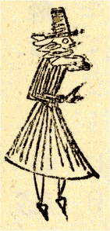
一月や道化帽子の色あかき一寸坊の小屋に雪ふる
かなしや雪のふる日も道化ものもんどりうつとよく馴れにけり
ほこりかにとんぼがへりをしてのくるわかき道化に涙あらすな
夜おそくひとりひそかに帰りきて道化衣裳を
脱る男あり
感冒なひきそよ朝は
冷たき鼻の
尖ひとり
凍えて春を待つ間に
寂しさに赤き硝子を透かし見つちらちらと雪のふりしきる見ゆ
厨女の白き
前掛しみじみと青葱の香の
染みて雪ふる
つつましき朝の食事に香をおくる小雨に濡れし
 芙藍
芙藍の花
つや青き支那の
料理人が
面がまへ憎しとばかりうつ霰かな
腰ひくき浜のガイドが襟にさす
温室咲きの花の色の赤さよ
ぬくぬくと
双手さし入れ別れゆくマフの毛いろの黒き雪の日
薄青き路上の雪よあまつさへ日てりかがやき人妻のゆく
君かへす朝の
舗石さくさくと雪よ林檎の香のごとくふれ
猫柳薄紫に光るなり雪つもる朝の河岸の景色に
屋根の雪屋根をすべると三味線の棹拭きかけて泣く女かな
雪ふるひとりゆく夜の松の葉に忍びがへしに雪ふりしきる
 古聿
古聿嗅ぎて君待つ雪の夜は
湯沸の湯気も静こころなし
ああ冬の夜ひとり汝がたく
暖炉の静こころなき吐息おぼゆる
雪の夜の
紅きゐろりにすり寄りつ人妻とわれと何とすべけむ
狂ほしき夜は明けにけり浅みどりキヤベツ畑に雪はふりつつ
雪ふるキヤベツを切ると小男が段々畑をのぼりゆく見ゆ
わかき日は赤き胡椒の実のごとくかなしや雪にうづもれにけり
その
翌朝おしろいやけの素顔吹く水仙の芽の青きそよかぜ
四十路びと
面さみしらに歩みよる二月の朝の
芙藍の花
つつましきひとりあるきのさみしさにあぜ菜の香すら知りそめしかな
あはれなるキツネノボタン春くれば水に馴れつつ物をこそおもへ
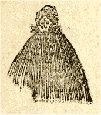
みじめなるエレン夫人が
職業のミシンの針にしみる雨かな
名なし草
紅く
小さく咲きそめぬみすぎ世すぎの
の
日向に
春が来た。黄色なサンシユユの梢に、沈丁に、針えにしだの苦き尖りに
沈丁の薄らあかりにたよりなく歯の痛むこそかなしかりけれ
猫柳春の暗示のそことなくをどる河辺を泣きてもとほる
猫柳ものをおもへば猫の毛をなづるここちによき風も吹く
細葱の春の光をかなしむと真昼しみらに小犬つるめる
野に
来れば遠きキヤベツの畑をゆく空ぐるまの音もなつかしきかな
すずろぐは葱か、キヤベツか、
きさらぎのそことなき春の暗示よ
ふくれたるあかき手をあて
婢女が泣ける
厨に春は光れり
かりそめにおん身慕ふといふ時もよき
俳優は涙ながしぬ
わが
愛づる小さく
陋しくいぢらしき
白栗鼠のごと泣くは誰ぞや
いざやわれとんぼがへりもしてのけむ涙ながしそ君はかなしき
わがどちよ寂しきどちよつねに見て思へばくるし泣かざれば
憂し
おのがじし弱きけふ日の涙をばはふり落して鳴ける小鳥ら
寂しさのこのもかのもにへりくだり泣けば心の響きこゆる
涙してひとをいたはるよそ人のあつき心をわれに持たしめ
つかのまも君を見ずては抑えがたきかなしき狐つきそめにけり
歇私的里の冬の発作のさみしさのうす雪となりふる雨となり
冷やかに薄き

をしばたたく人にな馴れそ山の春の鳥
芥子のたねひとり
掌にのせきらきらと蒔けば心の
五月忍ばゆ
［＃改丁］
［＃ページの左右中央］
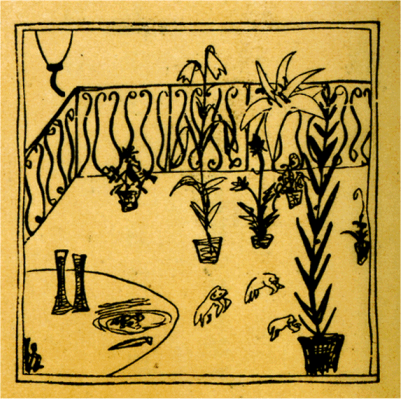
［＃改ページ］
歎けとていまはた目白僧園の
夕の鐘も鳴りいでにけむ
ソフイー、けふもまた気づかはしさうなお前の瞳に薄い雲がゆく、薄い雲がゆく
春はもや静こころなし
歇私的里の人妻の
面のさみしきがほど
君見ずば心地死ぬべし
寝室の桜あまりに白きたそがれ
私は思ふ、あのうらわかい天才のラムボオを、而して悲しい宝石商人の息づかひを、心を
アーク燈いとなつかしく美くしき宝石商の店に春ゆく
美くしく小さく
冷たき
緑玉その玉
掏らば
哀しからまし
いと憎き宝石商の店を出で泣かむとすれば雪ふりしきる
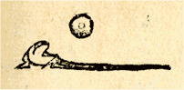
温かに
洋傘の
尖もてうち散らす
毛莨こそ春はかなしき
しみじみと
二人泣くべく椅子の上の青き蜥蜴をはねのけにけり
定斎の
軋みせはしく橋わたる江戸の
横網鶯の啼く
桜、さくら、街のさくらにいと白く
塵埃吹きつけけふも暮れにけり
鐸鳴らす
路加病院の
遅ざくら春もいましかをはりなるらむ
思ひ出の赤き毛糸よ、夕暮の薄らあかりにたゞたぐれ、静こころなく
やはらかに赤き毛糸をたぐるとき夕とどろきの遠くきこゆる
泣かむとし赤き硝子に背を向けつ
夕は迫る窓の
内部に
いつしかと身は
掛に置く塵の白きがごとも物さびてける
かろがろと女腰かけなにやらむ花あかき窓に物思ひ居り
よしやあしや君が銀座の入日ぞらほのかに暮れて夜となりにける
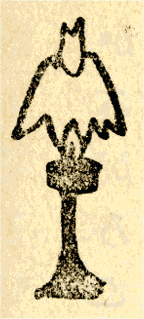
つくづくと昼のつかれをうらがへしけふもラムプを
点すなりけり
編みさしの赤き毛糸にしみじみと針を刺す時こほろぎの鳴く
鳴りひびく心甲斐絹を着るごとしさなりさやさやかかる夕に
これやこの絹のもつれをときほぐしほのかに
夜を待つすべもがな
かなしきは気まぐれごころ宵のまに朝の風たち
蜩の啼く
松の葉の松の木の間をちりきたるそのごとほそきかなしみの来る
なまけものなまけてあればこおひいのゆるきゆげさへもたへがたきかな
ほれぼれと歌ふにしくはなかるらむおもへば
憂しや涙ながるる
ものおもふわかき男の息づかひそなたも知るやさるひあの花
なまけもの昼は昼とてそことなきびんつけの香にも涙してけれ
へら鷺の卵かへすとなまけものなまけはてたるわれならなくに
おづおづとわかきむすめを預れる人のごとくに青ざめて居り
このおもひ人が見たらば
蟇となれ雨が降つたらへら鷺となれ
わがゆけば男のにほひちかよると
含羞草の葉を閉づるかも
ものおもへば肩のうしろにこそばゆきわかきをなごのといきこそすれ
夕暮のあまり赤さになまけものとんぼがへれば啼くほととぎす
ゆくりなく
庚申薔薇の花咲きぬ君を忘れて
幾年か経し
うらうらと
二人さしより泣いてゐしその日をいまになすよしもがな
ただひと目君を見しゆゑ三味線の
絃よりほそく顫ひそめにし
ほれぼれと君になづきしそのこころはや裏切りてゆくゑしらずも
嗅ぎなれしかのおしろいのいや薄く
冷たき
情忘られなくに
女は白き眼をひきあけてひたぶるに寄り添ふ、淫らにも若く美しく
どくだみの花のにほひを思ふとき青みて迫る君がまなざし
いつとなく親しむとなく寄るとなく馴れし
情も忘られなくに
偽おほく而もなほ美しき女ありけり
その女消えさりにけり
くちびるの
紅く素顔のいと蒼き女手品師君去りにけり
かはたれの白き露台に出でて見つわがおもふ人はいづち去にけむ
仏蘭西のみやび少女がさしかざす
忽忘草の
空いろの花
かなしみは出窓のごとし
連理草夜にとりあつめ
微かぜぞ吹く
にほやかに君がよき夜ぞふりそそぐ白き露台の矢ぐるまの花
匂よき宵のロベリヤ朝の芥子小窓に据ゑて忍ぶ日は来ぬ
昨日君がありしところにいまは赤く鏡にうつり
虞美人草のさく
煩悩の赤き花よりやはらかに煙る
草生へ鳩飛びうつる
夕かけて白き小鳥のものおもひ木にとまるこそさみしかりけれ
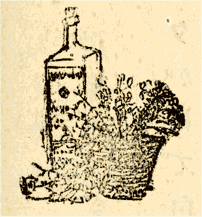
空いろよりすこし濃きロベリヤの花はほのかに小さくして、しかも数かたまりて瞳をひらく。悲しき日その花をながめて
空いろのつゆのいのちのそれとなく
消なましものをロベリヤのさく
［＃改丁］
［＃ページの左右中央］
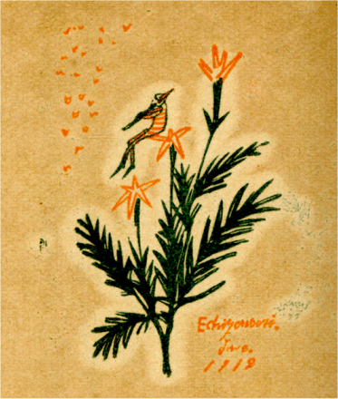
［＃改ページ］
いつの日か懐かしいと思つて小
に据ゑて置いた忽忘草も、青い
金剛石花も、空色のロベリヤももうみんな枯れてしまつて、小石川の植物園に新たに茴香の花の咲く時節が来た。梧桐のかげに客待をしてゐる人力車夫にも、銀座の横町に荷を下すバナナ売の半纏にも硝子屋の白い斜面の
日覆にも、愈夏らしい強い光が照りつけて、早や日中から張りわたした虫売の露店の薄い
天幕のかげにも幽かに鈴虫が鳴きはじめる。なつかしい、然し何となく寂しいやるせない夏、夏は丁度白い服をきたヒステリーの看護婦の夕方の
露台に出て吹き鳴らすはるもにかのやうに何時も私に新らしい哀傷のたねを蒔かしめる。
敬虔な私のいまの心持は軽薄なワイルドの美くしい波斯模様の色合から薄明りの中に翅ばたく白い羽虫の煙のやうなロウデンバツハの神経に移つてゆく。静かな夏の日の
独居が私の心をまた小さな
仙人掌の刺のうへに留らせ、黄色い名も知れぬ三ツの花のうへにしみじみと飛びうつらす。このふた月あまり私はただ静かに自分自身の心を観照して、燃え狂つた煩悩の花壇から幽かな銀色の虫の音を拾つてゆくより外に騒がしい周囲の如何なる事情からも禍される事が無くて過ぎた。私の目下の一大事は驕奢な貴公子の生活を羨む事でもなく、また華やかなバンドマンの歌劇を観にゆくことでもない。さうして無論
流行の背広を着てお馴染みのカツフエに
苦い珈琲を啜り、リキユールの冷たいさかづきに唇をあつることでもない、おしろいの匂と酒と友人とに離れてからもう既に久しい時が経つた。私はただ独り
薄明の
側に坐つて
縒れからんだ神経の絹糸のもつれをときほぐし、或は冷たい硝子のフラスコのそのたよりない皮膚の上をつつましやかに匍ひ廻る小さな細蟻の感覚に心をあつめ、いかにしてまた西洋葵の花弁の上に悲しい一日の歎きをとんぼがへりさせるかといふ、たつたそれだけの謙遜な心に真実私自身を洗練して、品の高い陰影の微光のなかに幽かに思想の芽をひらく、譬へやうもないその美くしい歓会の時の来るのを待つてゐる。
近代の
傷ましい悩みからぬけいでて純なる小鳥の心にたちかへれよ、たゞ自らを偽るな、涙を惜しめ、而して美くしい小さな
冷たい
緑玉のごとく常に悲しい光に息づけよ。若しわれと己れ自身を偽つたなら、白い鵞鳥は
蟾蜍となり、黄金の匙は怪しいニツケルのナイフとなり、酒は酢となり、きりぎりすは
蚯蚓となり、恋人の美くしい
眸は忽ち賤しい波羅門の腕環にはめられて一生を浅ましい
脂汗と怪しい畜類の匂に汚されて了うであらう。
暑い夏の日に涙をながし、さうして身のうちによそならぬわが汗の臭ひを嗅ぎ、なつかしい自分の命を、人よ、
汝がしみじみと思ひ知りえた時、微かな夏と心との感覚をわれとわが指さきによせあつめて浮彫の寂しい小さな
白金の函のなかに入れ、而して
蓋をかたく閉して、幽かな薄明の中にさし置けよ。而して寂しさに堪へかねた時、その上に薄いリキユグラスをのせ、強いウヰスキーの少量を注げ、その黄色の漣が幽かな陰影の刺戟を顫はせて
白金の微光に投げかくるとき封じられたすべての哀傷が恰も冷たい
鍼医の銀針のやうに、或は黄緑、青紅、様々の光沢と信実ある結晶の涙を湛へた美しい宝石の音譜のやうに、初めて底の底から洗練され命づけられた感覚の啜泣きを、幽かに幽かに不可思議な夜天のパノラマに伝へるであらう。
私はうらわかい宝石商の涙をよく知つてゐる。さうしてあの天才のラムボオを嗾かして寂しい商人の群に駆り立てた怪しい宝石の心を、誘惑を、譬へやうもない美くしいその魅力を
悲愁をよく知つてゐる。さうしてまたオスカアワイルドやヴエルレエヌを牢獄の底に泣かしめた悲しい耽美の心意気をも、青玉の露をふり落す葦の葉の囁きをも、カアネエシヨンの花を恐るる小さな緑蛇の心をも、私はまたよく知つてゐる。
愛人の胸から貰つた小さな青玉の音色は絶えず新らしい私の涙に濡らされてりんりんとあるかなきかに鳴り響く。而して昼は幽かに、夜は清く、朝は寂しい自鳴鐘のやうに時雨の
霊をそそのかしてほのかに白芥子の花に
纏［＃ルビの「まつわ」はママ］る。ともすれば置き忘れたその青玉の
眸は
微かなタナグラ人形の
陰影から小さな玉虫の眼のやうに顫へて、絶えず移り気な私の心を気遣はしさうに
熟視める。而してオペラの幕あきの合図の電鈴のやうにとりとめもなく
逍遥うてゐる私の夕暮の感覚をひき戻す。
夏、夏、夏の薄暮は何時もアーク燈の光のやうに薄紫の涙に濡れ
潤つたやるせない寂しい微光の氛囲気を私の心の
周囲にかたちづくる。而して今日のとりとめもない感想も微かな白い羽虫となつてその陰影の中に閃めきながら、鳴り響く青玉の
音色も暮れてゆく……孱弱な心、繊細な絹糸のもつれをかたよせて、私はまた久し振りに、あの銀座の青い柳のかげの白い瀟洒な喫茶店の椅子に寂しい孤独の身をなげかけて、せめては冷たい一杯のアイスクリームにさらに悲しい哀傷の新らしさも味つて見やうかしら、それとも
例日のやうに名も知れぬ黄色い三つの花の上に小さな私の霊をあづけて、たつた独りで何時までも何時までも泣いてゐやうかしら。それとも私の小さな涙の玉を赤い西洋葵の上に一踊りとんぼかへりをさして何がなしに笑つて見やうか。……ああ、とうとう日が暮れて、鳴り響く青玉の音色も暮れてゆく。
（Echizenbori, 28.  . 1912.）
. 1912.）
［＃改丁］
［＃ページの左右中央］
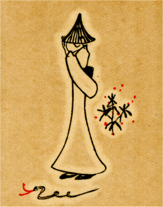
罪びとソフイーに贈る
「三八七」番
［＃改ページ］
ひとすぢの
香の煙のふたいろにうちなびきつつなげくわが恋
あだごころ君をたのみて身を
滅す媚薬の風に吹かれけるかな
哀しくも君に思はれこの惜しくきよきいのちを投げやりにする
君と見て
一期の別れする時もダリヤは
紅しダリヤは
紅し
君がため
一期の迷ひする時は身のゆき暮れて飛ぶここちする
哀しければ君をこよなく
打擲すあまりにダリヤ
紅く恨めし
紅の天竺牡丹ぢつと見て
懐姙りたりと泣きてけらずや
身の上の一大事とはなりにけり
紅きダリヤよ
紅きダリヤよ
われら終に
紅きダリヤを喰ひつくす虫の群かと涙ながすも
鳴きほれて逃ぐるすべさへ知らぬ鳥その鳥のごと捕へられにけり
かなしきは人間のみち
牢獄みち馬車の
軋みてゆく
礫道
眼をつぶれど今も見えたる草むらの麦稈帽は光るなりけり
大空に円き日輪血のごとし
禍つ
監獄にわれ
堕ちてゆく
胸のくるしさ
空地の
落日あかあかとただかがやけり胸のくるしさ
まざまざとこの黒馬車のかたすみに身を伏せて君の泣けるならずや
夕日あかく馬のしりへの
金網を透きてじりじり照りつけにけり
夏祭わつしよわつしよとかつぎゆく
街の
神輿が遠くきこゆる
泣きそ泣きそあかき
外の
面の軒したの廻り燈籠に
灯が
点きにけり
うれしや監獄にも花はありけり
草の中にも赤くちひさく
しみじみと涙して入る君とわれ
監獄の庭の
爪紅の花
女はとく庭に下りて顫へゐたり、数珠つなぎの男らはその後より、ひとりひとりに踉けつつ匍ひいでて紅き爪紅のそばにうち顫へゐたり、われ最後に飛び下りんと身構へて、ふとをかしくなりぬ、帯に縄かけられたれば前の奴のお尻がわが身体を強く曳く、面白きかな、悲しみ極まれるわが心、この時ふいと戯けてやつこらさのさといふ気になりぬ
やつこらさと飛んで
下りれば
吾妹子がいぢらしやじつと
此方向いて居り
編笠をすこしかたむけよき君はなほ
紅き花に見入るなりけり
鳳仙花
紅く咲ければ女子もかくてかなしく美くしくあれよ
この心いよよはだかとなりにけり涙ながるる涙ながるる
罪びとは罪びとゆゑになほいとしかなしいぢらしあきらめられず
ふたつなき阿古屋の玉をかき抱きわれ泣きほれて
監獄に居たり
どん底の底の
監獄にさしきたる
天つ光に身は濡れにけり
日もすがらひと日
監獄の鳩ぽつぽぽつぽぽつぽと物おもはする
監獄にも鳳仙花咲けりいと
紅しとこの弟に言ひ告げやらむ
母びとは悲しくませば鳳仙花せめて
紅しと言ひ告げやらむ
いつまでか日は東よりのぼるらむ
昨日に同じ赤き花咲く
あはれなる獄卒どもが匍ひかがみ
紅きダリヤの毛虫とる見ゆ
太陽のもとに許されて尿するは
うれしきかな楽しきかな
狂人の赤き花見て叫ぶときわれらしみじみ出て
尿する
赤き花見つつ涙し
頑なのこの若ものが物言はぬかも
バリカンの光うごけばしくしくと
痛き
頭のやるせなきかなや
バリカンに
頭あづけてしくしくとつるむ羽虫を見詰めてゐたり
おのれ
紅き水蜜桃の
汁をもて顔を
描かむぞ泣ける
汝が顔
夕されば入日血のごとさしつくる
監獄うれしや
飯を
食べてむ
驚きてふと見つむればかなしきかわが足の指も泣けるなりけり
わが
睾丸つよくつかまば死ぬべきか
訊けば心がこけ笑ひする
淫れ歌うたひつくして泣くなめり忘れ難かりあきらめられず
猫のごと首絞められて死ぬといふことがをかしさ
爪紅の咲く
監獄にて子を生みし女ありけり
いかなる罪業のめぐりなるらむ
恐ろしくおのれ死なむとつきつめぬいきいきとまたも赤子啼き啼く
夕されば火のつくごとく君恋し命いとほしあきらめられず
曇り日の桐の梢に飛び来り
蜩鳴けば人の恋しき
市ヶ谷の
逢魔が時となりにけりあかんぼの泣く梟の啼く
夜となりぬのうまくさんまんだばさらだせんだまかろしやだとわが父の泣く声のきこゆる
梟はいまか
眼玉を開くらむごろすけほうほうごろすけほうほう
たれこめて深きねむりに
堕つる時わが
傍に来り寝る女あり
君もなほ死なずしありけむさめざめと夜の
間に見えて涙を流す
一列に手錠はめられ十二人涙ながせば鳩ぽつぽ飛ぶ
鳩よ鳩よをかしからずや
囚人の「
三八七」が涙ながせる
向日葵向日葵囚人馬車の
隙間より見えてくるくるかがやきにけれ
鳳仙花われ
礼すればむくつけき看守もうれしや目礼したり
鳳仙花よ
監獄にも馴れ罪にも馴れ
囚人にさへも馴れむとするか
監獄いでぬ重き
木蓋をはねのけて林檎函よりをどるここちに
監獄いでぬ走れ
人力車よ走れ
街にまんまろなお月さまがあがる
監獄いでてじつと顫へて噛む林檎林檎さくさく身に
染みわたる
くれなゐの濃きが別れとなりにけり
監獄の花
爪紅の花
空見ると強く大きく見はりたるわが
円ら眼に涙たまるも
烏羽玉の天竺牡丹咲きにけり男手に取り涙を流す
烏羽玉の黒きダリヤにあまつさへ日の照りそそぐ日の照りそそぐ
あまつさへ夾竹桃の花あかく咲きにけらずやわかき男よ
木更津へ渡る。海浜に出でて
あまりに悲しかりければ
いと
酢き赤き
柘榴をひきちぎり日の光る海に投げつけにけり
白き猫あまたゐねむりわがやどの
晩夏の
正午近まりにけり
驚きて猫の
熟視むる赤トマトわが投げつけしその赤トマト
あかあかと
騒ぎ廻りそ人力車夕日に坐り泣く男あり
またぞろふさぎの虫
奴がつのるなり黄なる鶏頭赤き鶏頭
やはらかにロンテニースの
球光る公園に来てけふもおもへる
草の葉に
辷りちろめく
青蜥蜴その児悲しも夕日は光る
くつわ虫を蝉かと思うた、
ひとりひるねの宵のねざめに
かなしければ昼と夜とのけぢめなしくつわ虫鳴く
蜩の鳴く
曇り日の朝の瓦の見はるかしを鳩歩み居れりさみしきか鳩よ
電線に雀とまりてつるみたり悲しかりけりまた飛んでけり
心心赤き実となり枝につく鴉
食まむとすはぢぎれむとす
柿の赤き実
隣家のへだて飛び越えてころげ廻れり
暴風雨吹け吹け
電線に鳶の子が啼き月の夜に赤い
燈が
点くぴいひよろろろよ
なになれば猫の児のごと泣くならむ
鳶とまれり
電線の
上に
横網に一銭蒸汽近づくと廻るうねりも君おもはする
見れば
乞食は腐れ
赤茄子をかいつかみひたぶる泣きて
食ふなりけり
小犬二匹石炭
舟のふなべりを鳴けり狂へり夜に叫び居り
ぬば玉のくらき水の
面を奥ふかく石炭舟のすべりゆきにけり
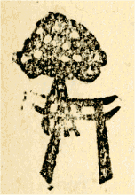
十一月は冬の初めてきたるとき
故国の
朱欒の黄にみのるとき
喨々とひとすぢの水吹きいでたり冬の日比谷の鶴のくちばし
かなしみに顫へ新たにはぢけちるわれはキヤベツの
球ならなくに
わが心ただひとすぢとなりにけり笛を吹け吹けとんぼがへれよ
ひとをどりひやるろと吹けば笛の音もひやるろふれうと鳴るがいとしさ
代々木の
青がもとに飛びありく
白栗鼠のごとく
二人抱きし
春くれば白く
小さき足の指かはゆしと君を抱きけるかな
手にぎりてかたみに憎み
蓴菜の銀の
水泥を見つめつるかな
死ぬばかり白き桜に針ふるとひまなく雨をおそれつつ寝ぬ
蝋燭をひとつ
点して恐ろしきわれらが閨をうかがひにけり
その
翌朝君とわが見て
慄へたる一寸坊が赤き足芸
ひなげしのあかき
五月にせめてわれ君刺し殺し死ぬるべかりき
男泣きに泣かむとすれば
竜胆がわが足もとに光りて居たり
このかなしき胸のそこひゆこみあぐるくるめきの玉は鉄の玉かも
来て見れば監獄署の裏に日は赤くテテツプツプと鳩の飛べるも
と見れば監獄署裏の
草空地にぶらんこの
環のきしるなりけり
氷閉ぢ野菜つめたき冬のみちゆけどもゆけども人に逢はなく
煤烟たなびくもとに
葛飾の青菜畑ははるばると見ゆ
ぐろきしにあつかみつぶせばしみじみとから
紅のいのち忍ばゆ
時計の針

と
とに
来るときするどく君をおもひつめにき
どれどれ春の支度にかかりませう
紅い椿が咲いたぞなもし
あかんぼを黒き猫来て食みしといふ恐ろしき世にわれも
飯食む
犬が啼き居り
乾草のなかにやはらかく首突き入れて犬が啼き居り
ひもじきかなひもじきかな
わが心はいたしいたしするどにさみし
吾が心よ夕さりくれば蝋燭に火の
点くごとしひもじかりけり
［＃改丁］
［＃ページの左右中央］
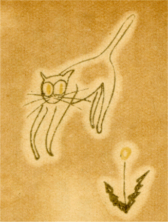
［＃改ページ］
いかにも悩ましい晩だつたと思つた。
歩行いてゐるとまるで自分の
身体が蒼白いセンジユアルな発光の中にひきつつまれて匂のふかい麝香猫か何ぞのやうに心までが腐爛してゆくかとさへ思はれた。
霧、霧、濃密な深い麻酔の雰囲気に新鮮な瓦斯が光り、電燈がぼやけ、アーク燈が濡れた果実のやうに香気を放ち、葉柳のかげに、舗石に、店々の
飾窓に、さまざまの光沢と陰影とが入り乱れて息づかひ深く霧が愈ふりそそぐ。行きかふ人かげ、馬車や自働車の
燈のくるめき、電車の
鐸――銀座の二丁目から三丁目にかけて
例も見馴れた浅はかな喧騒の市街が今はぼかされ掻き消されて、ただ不可思議な恍惚と濃厚な幻感とが恰度水底のキネオラマのやうに現出する。
その底を私は
歩行いてゐた。たとへ無罪になつたにせよ、かりにも人妻と牢獄に堕ちた私、敗徳者、――私は深い心に泣き乍ら幻想の
燈かげに弱つた
身体を労つてゆく、
潤つた霧がそこにもここにも重い層をなして私の身辺を圧へつける。夏帽子の麦稈、啣えたパイプの火、冷たい目、耳、
終ひには
背後から肩に手をかけ、咽喉を絞め、剰へ甘いものの腐れた匂さへ病ましい両の頬つぺたに吹きつける。而も耻と悲哀に弾ぢぎれさうな胸を抑えて、
怖々と人目を忍んで
歩るいてゆく切りつめた今の自分の心にも何時しか忘れはてた淫蕩な罪の記憶が泣かむばかりに芽ざしてくる浅間しさ。白い霧の中に立つて振り返ると、白い尻尾でも動くやうに足元から怪しげな影が逃げてゆく、向き直つてそつと歩み出すと重い霧の層までが又ふうわりと後から白くからみつく。真白な
獣、私は顫へて自分の身体がさうした
陋しい不思議な白い
獣に変化してゆくのではないかと思つた。苦しい、苦しい、まるで獣芝居に出てくる白猫の役者のやうに初めは白い毛皮の身のまはりを
嘲笑つてゐた人間の浮かれ心までが、遂には真実に淫逸な
四足獣の悩ましい悲念に帰つてゆくのではないかとさへ思はれる位、霧は怪しくふりそそいでくる。私は心の心に泣きながら、痛さに腫れた乳の上をしつかと抑えて、折々不気味な若い白痴の女のやうに自分の
背後を振り返つた。そのうちに何時の間にやら重いたどたどしい足どりが
泥酔漢めいて来て、時とするとその痛い乳の上から真白な畜生の手でもふいと飛び出しさうなそんな気がしてただもう恐ろしく、抑えては引つ込ませ、抑えては引つ込ませ、益々深い濃霧の中をあてどもなくまぎれ込んで了ふのであつたが……。
だがもう、時が過ぎた。
夜が更け、空が霽れ、蒼褪めはてた経験の貴さと冷たい霊性のなやみを染々と身に嗅ぎわけて、哀傷のけものは今深い闇のそこひからびやうびやうと声を
秘めて鳴き続ける。将に午前二時半、夜明前三時間、拭きすました紫檀の机に鏡を立て、つくづくと険しくなつて了つたわれとわが顔をぢつと
凝視めてゐた私は心の底から突きあげてくる
悲しさと狂ほしさから、思はず傍にあつたグロキシニアの真赤な花を抓みつぶした――鏡の中に
一層強く光つてゐた罪悪の結晶が血のやうに
痙攣んだ五つの指の間から点々と滲み出る。引き裂き、かき

りながら緊張しきつた心がまた遣瀬もなく啜泣く苦しさ。幸に獣ともならず迷うて迷ひぬいて、やつと夜ふけに静観の境地を得た私の霊魂はまた少らずわれと驚かされて、そつとまた鏡の中を透かした。哀れな瞳が狂気したやうな額の下からぢつと
此方を見てゐる。私は
悸然として乳の上を抑えた、白い手の芽も飛び出さなかつた、と思ふとぢつと
黙んだ唇が稍安心と憎悪の薄笑ひを浮べる。
夜が愈更けた。発作の後の悲しみが又犇々と迫る、深い恐怖に顫へ乍らグロキシニアと冷たい鏡を片よせて、私はまた新らしく顫へ初めた素つ裸の感覚から眼を凝らし、耳を聳て、まるで匍ひつくばつた生蕃の児のやうに生々と暗い闇の核心を
凝視めた。
こほろぎが鳴いてゐる……あれほど
執拗く人を苦めた白い濃霧の集団までがもう黴の毛ほどの細かい初秋の啜り泣きとなつて消え散つて了ひ、霊岸島の瓦から瓦へ、ただ幽かに薄明るい露の
潤りがチラチラと夜光虫の漣波の如うに
私歇的里の蒼い光をすべらし、取り残された
彼方此方の陰鬱な重い土蔵の
廂合から今はまたセンチメンタルな緑色の星の影さへ一つ二つと
燦めき初める、ホフマンスタールの夜の景色、暗碧な空の心――こほろぎまでが恐ろしいお岩稲荷の物かげからまるで小さな硝子玉でも磨り合はせるやうに
絶間もなく感覚的な啜り泣きを続ける。
――苦痛と羞辱とに惨たらしく心のデリカシーを傷けられて神経は愈鋭く知覚は弥が上に冷たくなつてゆく私の現在にもなほ哀しみ極つたかういふ法悦のひと時はある。さり乍ら、緊張し尽した今日此頃の感傷の鋭さは殆どその極度に達してゐる。苦しい、今のやうな
切迫つまつた生活があと三日と続いたなら私は狂気するか、自殺か、それとも疲れはてた肉体自身がそれより以前に脆い破滅を持ち来すか、何れにしても私の生命は長い事はない。目下の錯乱した官能には最早や轡虫と
蜩と、隣家の
自鳴鐘ときりぎりすとの区別さへつかぬほど昼と夜とが顛倒され、色触の世界にも何時しか夏と冬とが入れ代つて了つてゐる。剰へ日が血のやうに西からのぼり、月が痺れて東へ落ちかかる怪しい神経病者の
幻想さへ時折発作のやうに霊自身を
慴やかす。
今もこほろぎが鳴いてゐる。私はぢつと坪庭の闇を透かしながら、そこに如何なる罪悪が
企まれつつあるか、如何なる草木昆虫の感覚が又かういふ深夜の心に冷笑し、惑溺し、干渉し、声もなく歔欷し流涕するかに耳を傾けた。それがよしや暗黒の中に各々幽かに万物照応の理順を
秘してゐるとはいへ、鋭感な今の私には松の葉が如何に光り、
が如何に戦慄し、雪の下が如何に肺病の蒼白い皮膚を滑らかな苔の上に擦りつけるか
瞭然感知し洞察する事が出来る。
沈黙が一しきり続いてゆく。
ふと異しい物音がした、キキと何かを引つ掻くやうな、……と思ふとまた性急に、然し
怖々と、否寧ろ時折は
粗雑に
四肢で引つ掻きちらす
悪戯な爪の響――それが絶間もなくキキとキキと続いてくる。
畜生奴！ 私はつと立つて電燈をパツとその方へ向けた。薄緑色の
生絹の笠を透かして青く漉されたオスラムの燭光が二階から出窓を斜めに暗い隣の屋根へさつと
射す。私はぢつと注意深くその方へ眼を注いだ。
何といふ悲しい
光景であろう、そこには不意の輝きに驚かされた柿の木が真青に顫へ上つた、と思ふと、濡れた葉とまた真青な果の
簇がキラキラと私の眼を射返した。何たる神秘、落ちついた真青な輝き……暗い深夜の秘密に密醸された新鮮な酸素の噎びが雨後の
点滴と相連れて、冷たい霊性の火花も今真青に
慄き出した。……その下に猫がゐる。白い小さな猫がゐる。青い葉かげを透かして、緑青色に
燦つき出した新らしいコールタア塗の屋根の傾斜面からはつと驚いたやうに
此方を眺めてゐるではないか。――顫へる
如に白い
華奢な身を
竦め、背を聳て、ただぢつと青い射光の一点を見上げたまま、
退くにも
退かれず、全身の悲哀と恐怖とをたつた二つの金色の瞳に集めて、吸入るやうに
前肢をそろへた、あの眼、あの眼、あの
切迫詰つた眼の光、……ぢつと
凝視めてゐるうちに私の瞳は未だ曾て見たことのない皮肉な微笑と燃え上る憎悪と怒とに顫へて来た。
二つの霊がひたと今向ひ会つてゐる。而して各々の急所急所をきゆつと
凝視めて、痛ましいほどの凌辱を相互に続ける、その
恐怖と、憎々しさ、私は電球の尖をキツと差向けたまま、まるで青ざめはてた大刀の魚のやうに立ち竦んだ。
ふと、ある苛酷な夢の記憶が私の胸の底から突き上げる。
＊
それは今朝ほど（もう昨日の事になつたが）の夢に見た、夢とも覚えぬほど的確に而して冷酷な一喜劇である。
夢は幽かな金線の顫へから初まる。ただ蒼い幻の中の出来事である。冷たい何かの切石の上に、幽かな薄玻璃の鏡の
如に坐つて居た私の前に何時からとなく現れてひたと一列に座つた八九人の児供がある。うち見るところ
七八歳から
十五六歳までの頑是ない稚児の時代から既に物心ついた少年期の成人しきつた
顔容の奴まで、それがたつた一人の生長史をまざまざと見せつけられるかと思はれるまで、眼の大きい、額の広くつて青い、鼻の尖つた、何れも寸分違はぬ、小賢しい面色をしてゐる。而してただぢつと私を凝視めてゐる。蒼い光が何処からともなく
其奴らの横顔に射しつけると
恐怖とも
驚異とも、悲しさとも怪しさとも何とも名状し難い冷たさが犇々と私の身辺に詰め寄せて来た。
暫時誰一人口を開くものがない。遠くで幽かにチリツンチリツンと一絃の金線をつまぐる音色がする。
『どうぞその児を引き取つて下さいませんか。』
私は
悸然とした。声がしたのである。確かに、それが聴き覚えのある声である。人間の声とも畜類の呻きとも、又は草木の叫びとも、何ともつかぬ、冷酷な、それでなほ偏に縋り付くやうな、さうかと思ふと又心から人を見くびりせせら笑ひ影の影から
操かし
瞞らかすやうな、一度聴いたら逃れる事も忘れる事も出来ない、何かの深い執念と怪しい魔力を
秘めた
声音である。
『たつた一人で宜しいのです、どうぞ
何奴か拾つて下さいませんか。』
声は何処からともなく追ひ縋るやうに続いた。愈媚びて愈悲しげな哀訴の裏には切つて放した残忍と詰詐と苦しい蠧惑とがある。私は慄へた。而してただぢつと一列の子供達を
凝視めた。同じやうな冷たい顔がぢつと同じやうに
此方を眺めてほろりほろりと
円らな大きい眼の底から涙を流してゐる。私の頬にもほろほろ涙が流れてきた。
チリツンチリツン……金の
絃をまさぐる音色がする。
その声は
何処からした？ 私は
其奴らの
背後を差覗くやうに幾度か蒼い光の中を透かして見た。猫児一匹ゐさうにもない。ただ置いてきぼりにされた幼い
霊が泣いてゐるばかり、金の絃の顫音さへはてはやんで了つた。
憐憫と憎悪とが犇々と迫る。私はさうしてゐる内にこの中の一人をどうにでもして引き取らねば済まないやうな恐ろしいある魔力の圧迫と切実な愛情の
罠に引き堕されて了つたやうな気がする。もう一度怪しい声がしたらどう為やう、あれかこれか、真蒼な私の眼が列の端から端までずつと見渡すと、一緒にその
大人た陋しい、眼の大きく額の白い子供の顔がさも恨めしさうにほろほろ泣いてゐる。
私は愈切迫
詰つたと思つた――然し声はそれつきり、いくら待つても待つても誰も何とも云ふものがない。次第に恐ろしい沈黙と突き放されたやうな寂しさが切々と私の心を襲ふて来た、恐ろしい、どうにかして逃げ出したい――
チリツンチリツンとまた金の絃を弄ぶ響がする。
＊
私ははつとして、電燈の
栓をひねつた。と一緒にかさかさと慌てて逃げてゆく物音が、
真闇に掻き消された亜鉛屋根から忍びがへしに飛び下り、忍びがへしから板塀の裏を転がるやうに辷り落ちるその迅さ、慌ただしさ……
逃げたな、畜生！ ほつと吐息をついた、私は今、
真闇な向ふの路次口に転がり落ちて逃げてゆく猫の滑稽な動作を想像した、而して急に勝ち誇つた感情の弛緩と
陋しい皮肉な冷笑とが多少の
可笑みをさへ交へて私の心に突き上げてきた。私はまた何となく軽い安堵を覚えた、而して更に注意深く幽かなその夜明前の微光を透かした。
夜は益々更ける、而してこほろぎがまた恐ろしいお岩稲荷のかげから冷たい硝子玉をすり合せて鳴きつのる。
再び電燈をパツと点けた時、私はそこに初めて信実な柿の木の姿を見る事ができた、新らしい
悲哀と
驚異、まだ固い真青な柿の実はキラキラと厚い葉の簇から銀と緑を射返し、あの華奢な白猫のゐたあたりには、ただ空しいコルター屋根の斜面だけが今まるで青硝子のやうに上り輝いて、葉末に残つた露の点滴のみ幽かに光つては消えて落ちた。
こほろぎが鳴く。
私はまた静かに寂しい闇の核心を
凝視めながら、更に新らしい霊魂の
薄明を待たねばならぬ。
［＃改丁］
［＃ページの左右中央］
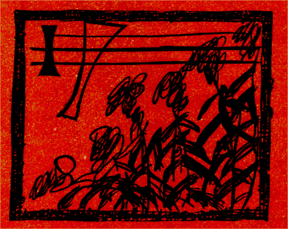
［＃改ページ］
大正元年八月二十六日午後四時過ぎ、俺は今染々とした気持で西洋剃刀の
刃を開く。庭には赤い鶏頭が咲いてゐる。細い四角の西洋砥石に油をかけ、ぴつたりと
刃を当てると、何とも云へぬ手あたりが軟かな哀傷の辷りを続ける。奇異な赤い鶏頭、縁日物ながら血の
如な
鶏冠の
疣々が怪しい迄日の光を吸ひつけて、じつと
凝視めてゐる私の瞳を狂気さす。
鶏頭、
汝はまるで寂寥と熱意との一揆のやうだ、何時でも
汝の
集団さへ見ると俺の気分が
鬱ぎ出す。
余程眠りこけて居たのか、昼寐から俺が覚めた時にはもう誰一人
家内には居なかつた、昼間の活動でも見に行つたものと見える。而して俺一人が
装飾も何にもないガランとした下座敷にぼつねんとかうやつて坐つて居る。何にも為る事がない、ただもう
倦怠るい、仕方が無いので妹の鏡台を縁側に持ち出して又かうやつて剃刀の刃を
当る。鶏頭が莫迦に光る、それかと言つてくわつと光つた外光の中に何かしら厭な陰気さが
嘲笑つてでもゐるやうに、赤い
鶏頭が眼に
染みる、茎が戦ぐ、その根元から小さい蜥蜴が走り出す。
何処かで御大喪中の忍びやかな爪弾の音が洩れる。昼の三味線、赤い鶏頭、それが真赤に陰気にこんがらがると、今度はまたお隣のお岩稲荷から恐ろしいお百度参りの祈願と呪咀との咽び泣きが
絶間もなく俺の後脳に鋭い
映画の閃光を刺し通す。
Gen-gen, by

-soku-by
, …… Gen-gen, by
-soku-by
, ……お岩稲荷大明神様……南無妙法蓮華経……
日が光る、くわつと暑い空気が淀む、鶏頭が笑ふ……石鹸を剃毛で掻き立てて顔一面に塗りつけると、
白子のやうに眼ばかり青く光り出す。剃刀をぴたつとつけてすうつすうつと辷らせると寂しい心が無性に晴々する。
それでも鶏頭、鶏頭、俺は悲しい。
真赤な
歇私的里の鶏頭、
お岩稲荷大明神様……
不図、俺は気がついた、何といふ坐り
態だ、まるで
汝の
肉体は白痴の女見たいにぶくぶくだねえ、だらしのない、どんなに暑くたつて、もつとチヤンと坐つておゐでなさい。
眼が鏡の中で笑ふ、剃刀が咽喉の薄い皮膚を辷る、
危ない、グツと突つ込んだら
汝は其儘寂滅だ。
――
哥兄や二階で木遣の稽古、音頭取るのがアリヤ
良人エンヤラナ……
にとにとと石鹸が指さきに流れる、気味の悪るい、冷たい、かと思ふと何処かで忍び笑ひの声さへ聴へる、三味線が急にはしやぐ、
……エンヤラヤレコノサア……サノセーアレワサエンヤラナ……
唄どころかい、
俺は苦しい、苦しい、鶏頭、真赤な鶏頭、
日が光る、お百度参りが泣く、俺の後脳が真赤に
瞬く。
露西亜の所謂トスカではないが、今日此頃は鶏頭さへ見ると俺のふさぎの虫がしくしくと腹の底から募り出す。
Gen-gen, by
-soku-by
…… Gen-gen, by
-soku-by
……お岩稲荷大明神様……南無妙法蓮華経……どうぞ旦那との縁が切れますやうに……
恐ろしい、
真昼間に何事だ。
おやお前さんは泣いてるね、鏡の中で泣きつ
面するのはお
止しなさい鼻でも剃り落したらどうします。
鶏頭、鶏頭、真赤な鶏頭。
まだ
汝はあの女に未練があるのかいと俺の眼が剃刀の下からにつと笑ふ。
一生の恋だ、命かけての愛だの信実だのと云つた蜜の
如ないつかの抱擁も千言万句の誓ひも
歓語も、但しは狂ひに狂つた欲念の
焔も、ただ一息に押しこかしてゆく「時」の力の前には何等の矜持も権威もあつたものでは無い。時は過ぎてゆく、而して凡てが何時となく伝奇的な美しい幻想の
色彩の中に掻き消されて了ふ……
ほつと吐息をして眼を
瞑る、剃刀が
頬辺に
冷やりと辷る……怪しい罪悪の秘密と淫蕩な官能の記憶とが犇々と俺の胸を掻き
る……
も一度逢ひ度い……ハツとして眼を
開けた、
嘲笑ふやうに鶏頭が光る。
ほんとにあの鶏頭のやうな女だつた、お
跳さんで嘘吐きで
怜悧で愚かで
虚栄家で気狂で而して恐ろしい悪魔のやうな魅力と美くしい姿……凡てが俺の芸術欲を
嗾かし
瞞らかし、引きずり廻すには充分の不可思議性を
秘して居た、
縦へ、それが代々木の草原を飛びあるく白栗鼠の児のやうに或は
陋しく或は軽浮であらうとも俺にはまた却てその無邪気と痴態とが
萎らしくも亦
憫らしく思はれたのだつた……そればかりか俺も亦釣られて栗鼠のやうに飛びあるいた……而して
遂ひには二人とも監獄に堕ちて了つた……兎に角……と又右の眼が
熟と
霊魂に喰ひ入るやうに覗き込む……
汝達はあまりに夢想家だつた、殊に
汝は現実そのものの生活をあまりに芸術に
為過ぎた……さうだ、それに違ひないと悲しい左の眼がうなづく……
汝が今日のやうな
惨めな世間の侮蔑と圧迫を蒙るのも当然だ、道ならぬ恋は一度は破滅する、美しい幻影も遂には破れる……さうだもう幻滅だと又左の眼が切なさうに差し覗く……初めそれほどにもなかつた
汝が
奈何して又あんなに急に夢中になつて了つたのだ、と右の眼が剃刀の下から嘲るやうに喰ひ入つてくる……それは俺にも
解らない、只俺の芸術至上主義が俺自身を妖艶な蠧惑と幻感の世界に昏睡さして了つたのだ、罪悪がそこで
醸された、つくづく俺は俺の魔法の空恐しさを知つた、而して女の美しさを、……啜り泣くやうに左の眼が光る。……誇張してはいけない、一体どちらが悪者なのだ、世間では
汝の方が正直過ぎた、
畢竟擬宝玉を買被り過ぎた、もつと薄情におひやらかして逃げて了へば何でも無かつたと云つてゐる。……有難う、警察でも監獄でもさう訊かれた、一体
汝達はどちらから先に手を出したのだと、……双方の眼が一時に苦笑する……さういふ上品な世の中だ、疑はる可くして初め疑はれ、待ち設けた最後の
罠に堕つ可くして的確に二人とも堕ちた、而して結末も至極簡単に解決した、それで可い、それで可い、二人のやうな罪囚の痴態はただ美しい伝説の中にのみ生甲斐がある。もう何事も訊いて呉れるな、……フフン、それではこれ位に切り上げやう、何れにしても
汝は莫迦だ、飛んでもない阿呆だ、罪人だ、気狂だ……さうだそれに違ひないと両の眼がじつとうなづく…
カラカラチーン、チーン、チーン、チーン……気まぐれな隣の
自鳴鐘がもう夜の十時を
点つ、夕日がくわつと壁から鏡に照り反す。鶏頭が
恍惚と息をつく、風が光る。
「そばから／＼と起る残念な事、口惜しい事、迫害、いろ／＼の事情にせめられて平常からきかぬ気の私はとりつめました、自殺と覚悟をきめました、然しここで死ぬのはいや、今一度お目にかかり度い／＼」……
はつとして
後を振り向いた、誰もゐないガランとした部屋の天井にただ手水鉢の水が斜めに水陽炎を投げてゐるばかり、ちらちら動く、光る、影と影とが逃げてゆく、追ひ廻す……
また向き直ると昼の恐怖が
寂として
後からそつと髪の毛を引つ張る。
「あなた此まま私を放つてお置きになるのですか、純様、ああ純様、恋しき恋しき純様、はやくはやく私を助けて下さい、逃げて下さい、苦しい残念、口惜しい、只一人の姉の同情で――いづれ／＼私逃げ出します、近いうちにさうして自殺します。」
狂気のやうな女の姿が眼に見える、俺もあの時は夢中だつた。苦しかつた。而して机の上にあつた真赤な眼無達磨を思はず抓みつぶして硝子に擲きつけた、また飛びついて小刀でグザとその白眼玉を刺し通した。さうだ、そうだつたに違ひない。
「私は覚悟致しました、決して／＼あなたまで死んで下さいとは申しません、死んでもいい、どうぞ私を引き出して下さい／＼。」
追つかけてまた手紙が来る、俺も火のつくやうに旅行支度をする、それでも待てないであのお跳ねさんは到頭身体がもう変だ、見るものも見なくなつたと云つて寄越した、かと思ふとその手紙より先きに大和の笠置から鵲の立つやうに飛んで来た。
南無三！……思ひ出しても身体が顫へる……そこにもうちやんと恐ろしい罠が二人を待つて居たのだ、それから俺達は飛んでもないところへ旅行して了つた。
嘘吐き、嘘吐き、真赤な嘘吐き、俺は何もかも知つて居る、私に
切迫詰らして愈心中させる気だつたか、それとも淫蕩な夏の旅行に私を
誘き寄せやうとしたのかを、どつちみち二つに一つだ。俺にしろもうあの時はあの女を思ふさま淫逸な欲念と熾烈な死と官能の幻惑の中に引きずり廻すより外に
途が無いと思つたのだ。
ほつと眼を瞑る、
「私はあなたが憎らしい、あなたは私を世の中から、凡ての人から見はなさせて一人ぽつちになつた後、いぢめていぢめてつき放さうとなさるに違ひありません、口惜しい、入らつしやい、ここへあの思ふ存分いぢめて上げ度い、入らつしやい／＼／＼／＼／＼気がもう狂ひ出しました。」
いつぞやの嫉妬と懸念とに無我夢中になつた女の手紙を思ひ出す。
鶏頭が真赤に光る。
鶏頭、鶏頭、俺は
什
考へても軽薄にはなれない、あの人が恋しい。
行く処まで行く、堕ちる処まで堕ちてゆく。
赤坊が啼く、
赤坊が啼く――嘘だ、嘘だ、それは何かの思ひなしだ。
はつと思つて空を
凝視める、光が蜂蜜の
如にキラキラとふりかかる。
前の
電線に雀がチユチユツと飛んで来て
交んだかと思ふとパツと別れた。
「悪因縁だ」――軈てしてほつと眼を下に落して又染々と剃刀の刃を手元に引よせた。
「悪因縁だ」――もう逃れつこはありやしない。
南無妙法蓮華経……
まだまだあの
女将はやつてゐる。キリキリと砥石に
一当あてて、じつと聴くともなく
刃を返すとホロリと涙が落ちた。
弱虫……苦痛と凌辱との思ひ出が切々と蘇る。未決監を出てからもう彼是一と月、その間、日となく夜となく緊張し切つた俺の神経はまるで
螽斯のやうに
間断もなく顫へ続けた。狂気と錯乱とがもう俺の目前に赤く笑つてゐる。さもなくとも俺は短命だ、ただ一息に俺は俺の息の根を吹き続けるより外に仕方がない。
Gen-gen, by
-soku-by
…… Gen-gen, by
-soku-by
……
苦しい、苦しい、
奈何かしてくれ、真赤な地獄絵の
映画がキラキラキラキラ俺の後脳に烙きつく。ふさぎの虫がしくしく募る。
ワンズワースの牢獄に初めて謙虚な悲念に掻き暮れ得た驕慢な天才児の末路は
汝にいい訓戒だ。
さりながらあの市ヶ谷の監獄生活は誠に貴い省察と静思との時間を
汝に与へたと、鏡の中から悲しげな両の瞳が
熟視める……
あれから苛酷な世の嘲笑と圧迫は日夜続いた、それでも
汝は能く耐えた、と又剃刀が冷たい辷りを額に続ける……
鶏頭、鶏頭、記憶は悲哀を再燃させる。
汝が初めて町の安床に行つた時……と又眼が憎さげに顫へる……がらがらと駆けて通つた囚人馬車がまるで
汝の頭を轢き
潰して鏡
一面に黄色く光つて行つた時、あの狆のやうな下司ばつた顔の親方が何と云つた。
「囚人馬車の癖に宮様のやうに威張りかへつてのさばりやがる……一体あん中に
幾人乗つてやがるんだろう……あんな罪人なんて奴は何だね樺太三界にでも
追放つちまつた方がいいんだ、ねえ旦那。」
その時の
汝の顔つたら無かつたぜ、「どうせ監獄の御用馬車だ、お客さんはせいぜい十人か十一人に極つてゐる、さうだあんな罪人は樺太にでも追放したがいい」
汝は顔を真蒼にして顫へたつけね、それからその翌日は……と又剃刀が眼と眼との間に顫へる……寄席の鈴本で、あの眼のクルクルと大きい厭味な洋服姿の秋月の奴が現在
汝のゐる前であのキザな十題話の落しに面白をかしく間男の意見をして見せた。あの時傍に小さくなつて居た弟が、あの内気な弟が顔を真赤にして兄さん兄さんと
汝の袖を曳いた。「心配するな、俺はもう何と云はれたつて姦通者に相違ないのだ、皆が皆寄つて
群つて苛めるならもつと
苛めろ、もつと
苛めろ、
一層の事ぐいと銀の槍でも突き通せ。」
汝の心はもうその時犇と優しい Tinka John の身体を抱き擁めてゐたつけね。又その翌日は……思ひ出しても厭やな暑い日だつた……苦しさ紛れに飛び込んだあの汚い八丁堀の大路次亭では見るからに貧乏臭い痩せぎすの講釈師が頓狂に顔を顰め乍ら張扇をペタペタと叩いてゐた。而してまた
汝の面前でヤンヤと人を笑はせた、……さうだ俺はよく知つてゐる、だらしなく昼寝してゐた爺までが歯の無いモガモガの口をあけてフナフナと笑ひ転けたあの時だ……「へえい、小桜さんの
花魁、ええ、あの花魁は」と頭を掻いて番頭が「実はなんでゲス、恰度昨日で年が明けましてな、それで店の吉どんと一緒に国へとか申しましてついさきほど立つて行つたばかりで、へい。」「ナニ、国へ帰つた、国、国とは一体何処だア。」「へえ、吉どんの故郷とかで。」「吉の故郷は何処だア。」と黄色い声をして、金を
貢いで挙句のはてに欺された旗本の野呂馬息子が歯噛みをする。「筑後の柳河ださうで。」「筑後の柳河ア。」口惜しさうに声が泣き出す。「へえ、大分遠方で、何でも長崎の
傍ださうで、えつへつへ。」さうだ、如何にも俺の故郷は筑後の柳河だ、それがどうした。笑ふにも笑はれない、何といふ
惨めさだ。
汝は思はず敷島の袋をぐいぐい抓みつぶして了つたつけね。
Gen-gen, by
-soku-by
…… Gen-gen, by
-soku-by
……お岩稲荷大明神様……どうぞ御願ひ奉る……
喧ましい、鶏頭、鶏頭、俺の肝の虫がもう弾ぢぎれさうだ。
暑い、暑い、くつわ虫が啼く、
蜩が啼く、くわつと外光が眼ににじむ、陰気な鶏頭がまた真赤に心のどん底から笑ひ出す。それだのに何としたか意久地なしの
霊魂がまたトスカ的に
滅入り込む、気が
悄気る。ポロポロと涙が
零れる。
不図眼を落すと、鏡台の上に空になつた香水の壜が載つて居る、その白いレツテルの腹の上に又小さな一寸蝋燭を立ててある。
家内の Tinka Ongo でもやつた事だらう、面白い、と一寸妹に感心する、而して又物好きな心がその寂しい心の尖にしんみりとマツチを擦りつける、と昼の焔が微かに燃える。鏡の
面を少し立てるとその中に声もなく焔が吸ひ込まれる。而して真昼間だのに俺の心の心が幽かに泣き初める。
汝は我儘だつた、而してあまりに芸術上の趣味なり嗜好なりに贅沢過ぎた。譬へ天真の稚気と信実とが絶えず心の底に昼の蝋燭の様にちろろめいてゐたにもせよ、馴れ過ぎた天の恩寵と世の浅はかな賞讃とが何時しか汝の貴重な霊性を盲目にした。怪しい感覚と不可思議な官能の幻感が又汝の肉体を思ふさま飜弄した。
汝は家庭に於ても一種の暴君であつた。それかと云つて汝ほどあの寂しい人々の間から尊敬と愛慕と信頼とを集め得たものはない、汝は七情の赴く儘に色を換ゆる無邪気な光のかめれおんであつた。然しまた豹のやうな空恐ろしい愛情の残虐をも敢てした、また怪しい魔法使ひの鞭のやうに凡ての肩の上に柔にその恐怖と愛憎の吐息とを投げかけた。汝はいかにも優しかつた、温かであつた、然し又気まぐれで、神経質で、能く怒り、能く苦しんだ。例へばその時折の衣服の
調色、ある日の汗の臭などの些細の感覚の不愉快から終日母の傍に坐る事さへ苦痛にしたほど我儘で又驕奢であつた。
然し
汝が一日家に居ないと家中の者は皆陰気な
蓴菜のそばからふいと温かな麝香猫でも居なくなつたかのやうに何時も妙に滅入つて了ふのが眼に見える。現在汝の弟は汝の芸術の第一の崇拝者ではないか、剰へ汝の婆やなどはまるで汝一人を神様か活仏のやうに頼り縋つて居る。実際、かういふ滑稽な盲信位難有迷惑な事はない。だがよしや汝が世間から棄てられ笑はれ嘲られても汝の肉親の凡ては汝に
縦いてゆく、而して善かれ悪かれ汝の為る事には
頭から信じ切つて居る。
何が仏だ、思はず手に持つた剃刀を向ふの壁に投げつけた。キリキリ突き立つてピヤンと跳ね反る。
印度の仏と能くあの若い独逸の画家に戯けた手付で例も皮肉な礼拝を受けさせられた熱帯系の菩薩面がニコリともせず鏡の中で顫へてゐる。厚い唇が今日は不思議に真赤に見える。昼の蝋燭が鼻の
真向にしんみりと光り輝く、眼と眼とが
凝とその底から吸ひ付くやうに差覗く……つくづくと
陰影と霊魂と睨み会つたまま底の底から自愛と憐憫の心とが切々と滲み出る。「ほんとに痩せた。」ほつと吐息をしてまた俺の気分もあれから随分変つたものだと思ふ、どんな苦痛と羞辱とに身を鞭れ曝されても持て生れたデリケエトな誰にも懐かしがられるあの貴い心持丈は少しも傷けないで居られたと自負する心の裏から、流石に険しくなつた額付や皮肉な口元の
痙攣さへ目につく。
ぢつとこみあげてくる哀傷の一念を抑えて、剃り立ての真蒼な面の光沢を
冷々と労ると、暑い夏の日にもしんみりと
霊魂の冷たさが身に染みる。
全く誇張された同情や信頼や愛情の過剰な負債には堪へられない、堪へられないばかりか或時は寧ろ嫌悪と反感と冷酷な肉親の呑噛をさへ感ぜしめる。どうかして切り抜けたい、独になりたい、そればつかりに俺は思はず血で血を洗ふやうな残虐な暴君にもなつた、罪人にもなつた、親不孝者にもなつた。かと云つて俺は俺の貴い霊魂をこれ以上に自ら侮蔑し傷け堕落させる事は出来ない、剰へ俺の肉体を血まみれに刺し貫いて俺自ら陋しい賤民の死体のやうに大道の真中に
放棄り放す訳にはゆかない。俺は俺自身が
愛惜い、命が惜しい、死に度くない、況して嘘か
真実か第三者の中傷か、いざとなつたら二人のどちらが罪が重くなるだらうと一時はわなわな顫へたといふ、あの軽薄なお跳ねさんなんぞと一緒に死んでどうなる――
俺が自殺したら無論肉親の一人二人は墓場迄も縦いて来るだらう――これは偽りでない――而してあの女でもひよつとかしたらあの可愛いい小さな心臓を今度は戯談でなしにキユツとピンの尖きで突き刺して笑つて眠て了ふかもわからない。然し俺は心中は御免だ――独で死ぬのももう厭になつた。たつた一人で生き度い、命が惜しい。
それはいつぞやは死なうとも思つた、俺の好きな植物園の薬草花壇で、毒薬を喫んで、あの
大蒜の根や、茴香の蕾を抓み散らして、精一杯に苦んで、藻掻いて血を吐いて、而して笑つて真蒼に腐つて了ひ度い――とも思つた。然し母迄がおせつかひにも一緒に自殺でも為さうな気振に見えたので、急に俺は不愉快になつて、その足で浅草の活動写真見に飛んで行つて了つた。
毒薬と云へばあの俺がある種類の予防に
納つて置いたあの甘汞を、何と間違へたか、蒼くなつて慌てて
秘して了つた俺の弟はほんとに可哀いい道化ものだ。
鶏頭、鶏頭、俺の弟はほんとに可哀いい道化ものだ。
時が経つ……蝋燭の火がぢぢと幽かに瞬く。
鶏頭、鶏頭、
記憶に悲哀は再燃する、切迫
詰つた俺の感覚が
四ん匍ひになつて剃刀を拾ひかける、ハツと
霊魂が後から呼び返すと意久地もなくパタリと身体が平べつたくなる、苦しい涙がポトリポトリと額を抑えた手の甲に零れる……
轡虫が啼く……
唐突に座り直して、ぐいと右の指を二三本白粉の瓶に突つ込む。ぐるぐると掻き廻してぺたりと面にぶつつける、……ふさぎの虫がクスクス笑ふ……
狂者、狂者、まるで汝は狂者だ、
恁うして居る中にも頓狂な発作の
陰謀が恐ろしい心のどん底から
可笑しいほどはしやぎ出す、
白粉を水にも溶かさないでべたべた塗りつける、にとにとと面が
突張る、眼が光る、見る見る能のお面のやうに真白に生色のない泣つ
面が出来上る。さうでもないか、
此奴、解剖学の標本室で見た死刑囚の白い面型その儘だ、さうだあの面型には眉の毛が二三本赤つちやけてくつついて居たつけな――ここまで
揶揄つて来て俺ははつと思つた、能い加減に巫山戯け散らしてゐた霊魂がピタと
緊張まる。眼が黒く光り出す、急に恐ろしくなつて
粉紅の円い球をぐいと右の
頬辺ににじりつける、と紅い日の丸の烙印が如何にも道化らしくパツと燃え出す、面白い、左へもひとつぺたりとにじりつける、あはは、泣つ
面がやつと笑ひ出した。立派な
戯奴だ、これでひとつ浮かれて退けるか。
活惚、
活惚、何処かでまだ三味線を弾いてゐる。ついと立つて紅い道化頭巾を冠る、浴衣を脱ぐ、薄いシヤツ一枚になつて、さて眉から鼻、口元と白粉を
均す、長い
瞼毛の
周囲を青インキで濃く隈をつける。
隈と云へば未決監では面白かつたな、とクスクス皮肉な笑が咽喉のぐりぐりにこみ上げる。ねえ
汝は贅沢だつたよ、牢屋に居ながら三度三度、スープに洋食を三品宛、それに果実は欠かしつこなし、あまり辛気なので食べ残しの水蜜桃で真紅な自画像をぬたくりつけてひどく叱られたつけな、あの
挿話は誰に聞かしたつて腹を
擁えるだろう、この
悪戯者はその翌日看守長から鹿爪らしく呼び出された、それはかうだ。「三八七番、この
真紅な
面は何だ。」「それは私の顔で御座います。」「何で描いた。」「水蜜桃の腐れたので描きました。」「ぢやあこの黄色いのは何を
用つた。」俺は髪の毛をもじやもじやと真黄色になすりつけたのだ。「それはバタで。」「この
点々は何だ。」「それは
辛子で御座います。」「青い眼玉はどうした。」俺はつくづく苦笑した、「それはサラダを
絞りましたので。」一帖の半紙を一枚
飜ると矢つ張り下にも俺の真紅な顔が泣つ面をしてゐる。また
飜ると矢張り黄色く滲み込んでゐる、また一枚また一枚、矢つ張り青い眼玉が光つてゐる。俺ははらはらしながら自分の面の皮でも一枚一枚ひん
飜られるやうに辛かつた……
ぷつと吹き出して立ち上ると、活惚、活惚、三味線が調子をつける。
Gen-gen, by
-soku-by
…… Gen-gen, by
-soku-by
……お岩稲荷大明神様……南無妙法蓮華経……どうぞ商売繁昌致しまするやうに……
鶏頭、鶏頭、俺はもう気が狂ひさうだ。
活惚、活惚、甘茶で活惚、塩茶で活惚、ヨイトナ、ヨイ、ヨイ、……
くるくると二つばかりとんぼがへりをする。ガランとした部屋の中に、たつた一人、真白な面を
緊張めてくるくるともんどりうつ凄さ、
可笑さ、又その心細さ、くるくると
戯け廻つて居る内に
生真面目な心が益落ちついて、凄まじい昼間の恐怖が腋の下から、咽喉から、臍から、素股から、足の爪先から、
空一面に拡がり出す。
鶏頭が真赤に真赤にひつくりかへる。
頭の
映画がキラキラキラキラひつくりかへる、
蜩が鳴く、お百度参りが泣く、三味線が囃し立てる。
活惚、活惚……
三味線がハタと止む……
と、くるくると
転がつてゐる俺自身が俺にももう恐ろしくて恐ろしくてたまらなくなつた、思はず投げつけられた
盗賊猫のやうにぽんと起き直るとその儘パタパタと二階に駈け上つた。
昼の蝋燭がまた幽かに取澄まして瞬く。
それから
暫時経つて、殆素つ裸の俄作りの
戯奴は外の出窓に両脚を
恍惚と投げ出して居た。而して今霊岸島の屋根瓦の波の上にくるくると落ちかかる真赤な太陽の光を
凝と眺めて居る。雲の影ひとつ見えない大空の果に鳩が火の玉のやうに飛んで居る。煙突の煤烟がくさくさと渦を巻く、電線が光る。
それでも、向ふの土蔵の屋根の上に枯れかかつた名も知れぬ雑草がしんみりと戦ぐでもなく
戦いでゐるのが眼に付いた、その僅な二三本しかない幽かな草の戦ぎがぢつと
熟視めて居るうちに、先程の活惚騒ぎで取り落したふさぎの虫をまた染々とぶりかへす。草が戦ぐ、また意久地なしの
霊魂が滅入つて了ふ。
悄気る、
鬱ぐ……涙がホロホロと頬つぺたを流れる。
と、Gen-gen, by
-soku-by
…… Gen-gen, by
-soku-by
……
急に寂しくなつて、まじまじと下を向く、とまた生憎な、目に入るでもなく庭の垣根越しに向ふの長屋の明け放した下座敷が見える。
おや、もう
電燈が点いて居る。昼間の光に薄黄色い火の線と白い
陶器の笠とが
充分にダラリと延ばした紐の下で、畳とすれすれにブランコのやうに部屋中揺れ廻つて居る、地震かしらと思ふ内に
赤坊が裸で匍ひ出して来た、お
内儀さんが大きなお尻だけ見せて、
彼方向いて事もあらうに座敷の中でパツと紺
蛇目傘を拡げる。かと思ふと何時の間に帰つて来たのか末の弟が厠の中から博多節か何か歌つて居る。
変だ、何だか何処かで火事でも燃え出しさうだ、空が焼ける、子供が騒ぐ、遠くの遠くで音も立てずに半鐘が鳴る……をや、俺の
脳膸までが
黄くさくなつて来たやうだぞ……犬までが吠え出した……何か起るに相違ない。
南無妙法蓮華経……お岩稲荷大明神様……
苦しい、苦しい、汗が流れる。
恰度こんな暑い日だつた、俺は監獄で……と
戯奴が面を
顰める……俺は監獄であまり
監房の臭気が陰気なので、汚ない亜鉛の金盥に水を入れて、あの安石鹸を
溶しては両手で掻き立て掻き立て、強い弾ぢきれさうな匂を息の苦しくなるほど跳ね散らしてゐた。
真白い
細かな泡と泡とが、緑に、青に、紅に、薄黄に、紫に、初めは紫陽花、終まひには、小さな宝玉に分解して数限りもなく夏の暑熱と日光とに光る、呟やく、泣く、笑ふ、嘲る……
恍惚と見入つて居ると、コツコツと隣の厚い壁板を向ふで敲く。そこで、俺も泡まみれの手でコツコツと合図をして「
奈何したの。」と腰をかがめる。
「
今日は盆の十六日ですねえ。」と気のない疲れた声が投げ出すやうにきこえる。
「さうだ、盆の十六日。」と俺も一寸
可笑しくなる。
「もうつくづく厭になつちやつた、ああああ……」
これがこの二月に浅草で友達を殺した男の声かと思ふと、何となく変な、不憫な、
厭あな気がする。二月から
入監つて、まだ一度か二度法廷に引つ張り出されたつきり、まだ刑も極らず、
放たらかしにされて居るのである。飽き飽きするのも無理もない。
暫時黙つて居ると、またコツコツと甘へるやうに
背後を敲く。
「何だね。」
「あの
睾丸抓んだら死ぬんでせうか。」
不意に俺の眼が笑ひ出した。
「そりやあね、ギユツと抓んだら
何時でも死にます。」と口を寄せて、また物好きな道化心が笑ひ出す。
「だが、一体
誰が抓むの誰の
睾丸を。」
「
私が抓むんですがね。」
猫のやうに頓狂な声がした。
と、思ひ出すと、取り澄ました俄作りの
戯奴が一時に真白な顔の造作を破裂さした、はははは、自分でも
吃驚するほどの大きな声を挙げ乍ら、腹を擁えて出窓から畳の上に転げ廻つた、而して又転げ廻つて／＼世界中がひつくりかへるやうに笑ひ続けた。
ははははは……………………
ははははは……………………
［＃改ページ］
数少きわが歌の中より、選びて僅に四百余首を得たり。わが歌はかの銀笛哀慕調のいにしへより哀傷篇四章の近什にいたるまで、凡ては果敢なき折ふしのありのすさびなれども、今に及びては旧歓なかなかに忘れがたし、ただ輯めて懐かしく、顧みて哀愁さらに深し。
処々に挿みたる小品六篇のうち、「桐の花とカステラ」「昼の思」の二評論は時折のわが歌に於ける哀れなる心ばえのほどを述べたれども、そはわが今のつきつめたる心には協はず、ただ詩のみ、余情のみ、うはかはのただひとふれのみ。
わが世は凡て汚されたり、わが夢は凡て滅びむとす。わがわかき日も哀楽も遂には皐月の薄紫の桐の花の如くにや消えはつべき。
わがかなしみを知る人にわれはただわが温情のかぎりを投げかけむかな、囚人 Tonka John は既に傷つきたる心の旅びとなり。
この集世に出づる日ありとも何にかせむ。慰めがたき巡礼のそのゆく道のはるけさよ。
この心を誰か悲しく弄ばむやんごともなし
やんごともなし
一九一二、初冬
著者
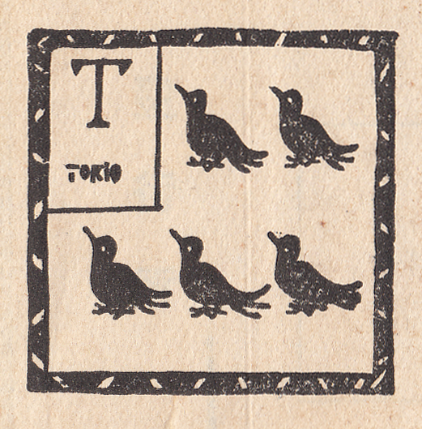
 夏
夏 冬
冬